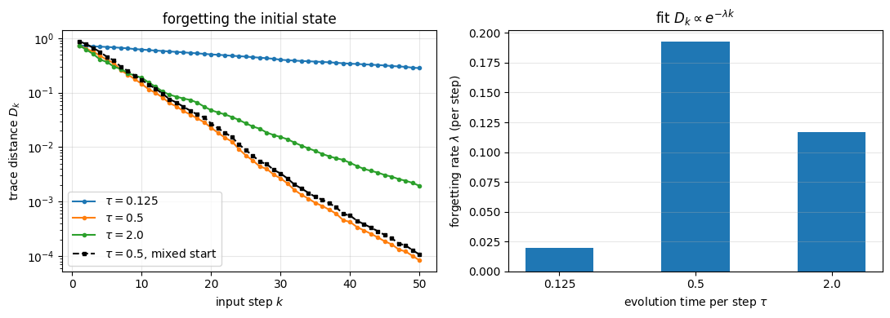
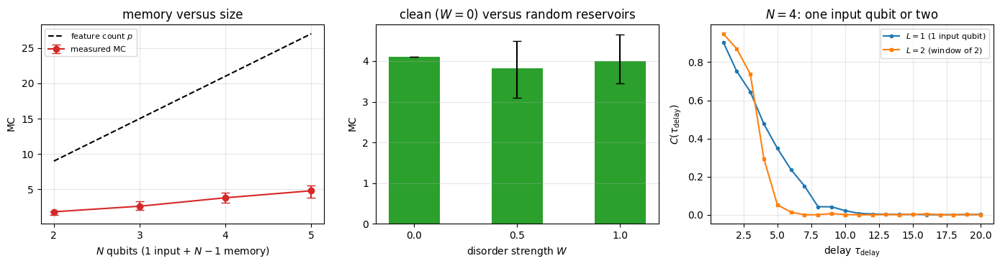
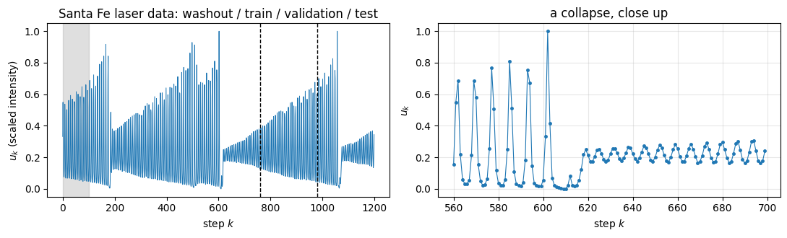
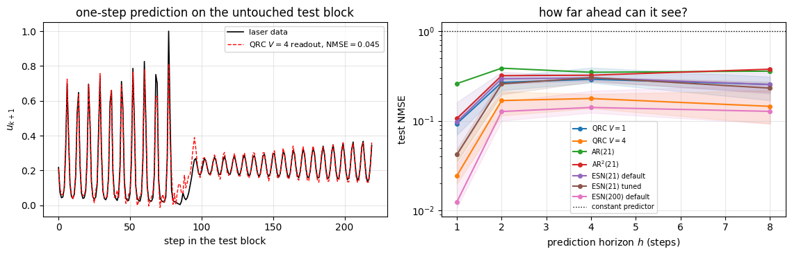
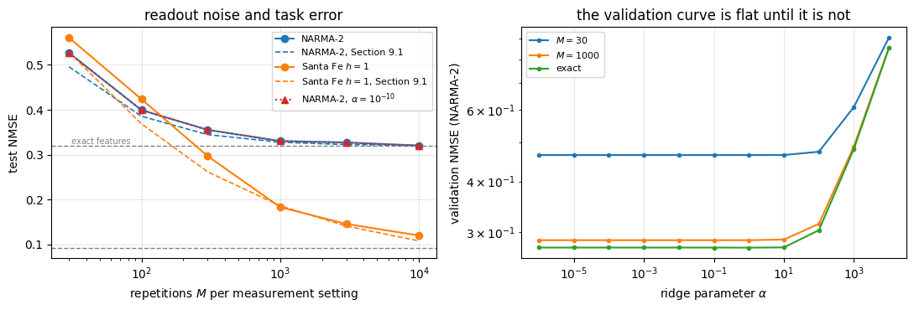
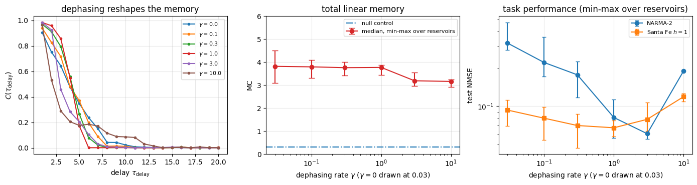

A time series arrives one number at a time: \(u_1,u_2,u_3,\dots\) — the intensity of a laser, the load on a power grid, the price of electricity. The generic task is to produce, at every step \(k\), an output \(\hat y_k\) that approximates some target \(y_k\) which depends on the whole past of the input: the next value of the series, a value seen \(\tau\) steps ago, or some nonlinear functional of the history. A machine that does this must have memory and must be nonlinear.
The textbook answer is a recurrent neural network: a state \(\mathbf{x}_k\in\mathbb{R}^n\) updated by \(\mathbf{x}_k=f(W\mathbf{x}_{k-1}+w_{\rm in}u_k)\) and read out by \(\hat y_k=\mathbf{w}^{\rm T}\mathbf{x}_k\). Training all of \(W,w_{\rm in},\mathbf{w}\) means propagating gradients backwards through hundreds of time steps; the gradients decay or blow up exponentially with the number of steps, and the cost function is non-convex. Around 2001 Jaeger, and independently Maass, Natschläger and Markram, proposed to give up on training the recurrent part entirely: take a fixed random dynamical system, drive it with the input, and train only the linear readout. The fixed system — the reservoir — has to do two things: mix past inputs into a high-dimensional nonlinear set of features, and forget its own initial condition. Training then reduces to linear regression, which is convex and has a closed-form solution.
Nothing in that recipe says the reservoir has to be a neural network. It has to be a driven dynamical system with memory and nonlinearity, and a many-body quantum system driven by repeated resets of one of its qubits is such a system. Fujii and Nakajima made this precise in 2017: the reservoir is a spin network with a fixed Hamiltonian, the input is written into one spin, the dynamics is unitary evolution for a fixed time \(\tau\), and the features are the single-qubit expectation values \(\langle Z_i\rangle\) of all qubits, read out several times per interval. Here we also use two-body correlators. The Hilbert space of \(N\) qubits has dimension \(2^N\) and the space of density matrices has \(4^N\) real dimensions, so a handful of qubits carries a very large internal state; how much of that a linear readout can use is measured below.
For the four-qubit reservoir studied here the measured answer is modest. Its linear memory reaches back about four inputs, and on every benchmark its test error is larger than that of a classical echo-state network with the same number of readout features, trained on the same data splits and with its hyper-parameters chosen on the same validation block (Sections 7, 8 and 10.1). Independent of that outcome are how a reservoir computer works, where its memory and its nonlinearity come from, how a ridge readout is trained and validated, and which physical knobs (evolution time, size, disorder, readout times, dissipation, measurement budget) set its behaviour.
Road map.
Section 2 introduces classical reservoir computing: why training recurrent networks is hard, the echo-state construction, the ridge-regression readout and its closed form, the train/validation/test protocol for time series, and the three benchmark tasks (linear memory capacity, NARMA, chaotic laser prediction) with their known bounds.
Section 3 defines the quantum reservoir: the qubit layout, the input encoding, the reset as a completely positive map, the Hamiltonian family, the readout observables and temporal multiplexing, and the proof that the features are multilinear functions of trigonometric functions of the past inputs, with the source of each nonlinearity identified.
Section 4 implements the protocol twice — as a density tensor and as pure-state trajectories — validates both against a dense-matrix reference, measures the \(1/\sqrt{M}\) statistical error, and shows that the comparison rejects a wrong channel.
Section 5 measures the echo-state property directly: two different initial states, the same input, the trace distance between them as a function of step.
Section 6 measures the linear memory capacity against the number of readout features, the evolution time, the number of qubits, the disorder strength and the number of virtual nodes, with a null control for its finite-data bias.
Sections 7 and 8 run the NARMA and Santa Fe laser tasks and compare the quantum reservoir with classical baselines of the same feature count, trained with the same protocol and with their hyper-parameters chosen on the validation block. The tuned echo-state network has the lower error on every task.
Section 9 replaces exact expectation values by estimates from \(M\) measurement repetitions, derives how the shot noise propagates through the regression, and checks the prediction.
Section 10 lets the reservoir decohere during its evolution and measures how dissipation changes memory and task errors; Section 10.1 collects the comparison with the classical baselines in one table.
Section 11 collects the cost model and the timings.
What you will learn
Physics
how a driven open many-body system acts as a nonlinear filter with fading memory, and where that memory physically lives;
why the erasure of a qubit makes the map forget its initial condition while the unitary dynamics alone never can;
where the nonlinearity comes from: the encoding supplies \(\cos\pi u\) and \(\sin\pi u\) of each input, and the products across different times come from the input entering the state multiplicatively at every reset;
what a measurement readout of a reservoir really costs, and how decoherence changes the trade-off between memory and nonlinearity.
Numerical methods
ridge regression from the normal equations, its singular-value form, and when regularisation matters (and when the measurement noise regularises the fit by itself);
memory capacity, its rigorous upper bound by the number of linearly independent state variables, and its bias at finite data length;
statistics over random reservoirs (medians and bands, never a single run), train/validation/test splitting for correlated data, and baselines whose hyper-parameters are tuned with the same care as the model under test.
Implementation practice
the entire drive over a time series as one lax.scan whose carry is the quantum state and whose outputs are the features, compiled once with jax.jit;
jax.vmap over disorder realisations of the Hamiltonian and over quantum trajectories;
a channel (partial trace plus re-preparation) implemented as two Kraus operators and validated against an independent dense-matrix computation.
Units and conventions as before: \(\hbar=1\), \(\vert 0\rangle\) is the \(+1\) eigenstate of \(Z\), Hamiltonians are written with Pauli matrices (not spin-\(1/2\) operators), qubit \(q\) is tensor axis \(q\).
Configuration
Every notebook of this course starts with the same cell. Choose where to run (DEVICE) and the floating-point precision (PRECISION): "double" = float64/complex128 (default, recommended for physics), "single" = float32/complex64 (half the memory, faster on consumer GPUs, but watch the round-off). All code below derives its dtypes from RDTYPE/CDTYPE and its check tolerances from TOL, so nothing else needs to change.
Code
# ==============================================================================# CONFIGURATION -- adapt to your hardware, then run the notebook top to bottom# ==============================================================================DEVICE ="auto"# "auto": use a GPU if JAX finds one, else CPU | "cpu" | "gpu"PRECISION ="double"# "double": float64/complex128 | "single": float32/complex64import osif DEVICE =="cpu": os.environ["JAX_PLATFORMS"] ="cpu"# must be set BEFORE jax is importedimport stringfrom functools import partialimport mathimport numpy as npimport jaximport jax.numpy as jnpfrom jax import lax# Precision is configurable: "double" = float64/complex128 (default; needed for long time evolutions and# tight validation), "single" = float32/complex64 (half the memory, faster on consumer GPUs).# In a notebook PRECISION is defined in the Configuration cell; for this module use the env var QE_PRECISION.PRECISION =globals().get("PRECISION", os.environ.get("QE_PRECISION", "double"))jax.config.update("jax_enable_x64", PRECISION =="double")RDTYPE = jnp.float64 if PRECISION =="double"else jnp.float32 # real dtypeCDTYPE = jnp.complex128 if PRECISION =="double"else jnp.complex64 # complex dtype of all states/operatorsTOL =1e-10if PRECISION =="double"else1e-4# tolerance for sanity checks (asserts)_LETTERS = string.ascii_letters # the 52 einsum index labels a-z, A-Zimport timeimport matplotlib.pyplot as pltif DEVICE =="gpu"and jax.default_backend() =="cpu":print("WARNING: DEVICE='gpu' requested but JAX found no GPU -- running on CPU.")print(f"JAX {jax.__version__} | backend: {jax.default_backend()} | devices: {jax.devices()}")print(f"precision: {PRECISION} -> real {RDTYPE.__name__}, complex {CDTYPE.__name__}, check tolerance TOL={TOL:g}")
JAX 0.11.0 | backend: cpu | devices: [CpuDevice(id=0)]
precision: double -> real float64, complex complex128, check tolerance TOL=1e-10
Engine recap — the simulator primitives used in this notebook (click to expand)
# ==============================================================================# ENGINE RECAP: the functions of quantum_engine.py (SmoQ.jax) used in this notebook.# Each one is derived, with its mathematics and an independent check, in notebook 08b# (Chapter 3), 'Building the quantum simulator engine'.# States are rank-N tensors of shape (2,)*N; every operator acts through ONE einsum.# ==============================================================================# ----------------------------------------------------------------------------# 1. Elementary matrices: Paulis, Clifford generators, rotations# ----------------------------------------------------------------------------I2 = jnp.eye(2, dtype=CDTYPE)X = jnp.array([[0, 1], [1, 0]], dtype=CDTYPE)Y = jnp.array([[0, -1j], [1j, 0]], dtype=CDTYPE)Z = jnp.array([[1, 0], [0, -1]], dtype=CDTYPE)H = jnp.array([[1, 1], [1, -1]], dtype=CDTYPE) / jnp.sqrt(2.0) # Hadamard: Z-basis <-> X-basisS = jnp.array([[1, 0], [0, 1j]], dtype=CDTYPE) # phase gate, S^2 = ZSDG = S.conj().TSP = jnp.array([[0, 1], [0, 0]], dtype=CDTYPE) # sigma^+ = |0><1| = (X + iY)/2 : spin raising |1> -> |0>, the decay jump operatorP0 = jnp.array([[1, 0], [0, 0]], dtype=CDTYPE) # projector |0><0|P1 = jnp.array([[0, 0], [0, 1]], dtype=CDTYPE) # projector |1><1|XX = jnp.kron(X, X)YY = jnp.kron(Y, Y)ZZ = jnp.kron(Z, Z)def ry(theta):"""Rotation about y: Ry(theta) = exp(-i theta Y/2) = [[cos, -sin], [sin, cos]](theta/2) (real matrix).""" c, s = jnp.cos(theta /2), jnp.sin(theta /2)return jnp.array([[c, -s], [s, c]], dtype=CDTYPE)# ----------------------------------------------------------------------------# 2. THE core primitive: a k-qubit operator acting on a tensor through ONE einsum# ----------------------------------------------------------------------------def apply_gate(psi, U, qubits):"""Apply a k-qubit operator U to the axes `qubits` of the tensor `psi`. MATH ---- One qubit (k=1), target q: psi'[s_0,..,a,..,s_{N-1}] = sum_b U[a,b] psi[s_0,..,b,..,s_{N-1}] Two qubits (k=2), targets (q1,q2); the 4x4 matrix is reshaped to U[a1,a2,b1,b2]: psi'[.., a1, .., a2, ..] = sum_{b1,b2} U[a1,a2,b1,b2] psi[.., b1, .., b2, ..] This IS the action of (1 x .. x U x .. x 1) -- written without ever building it. EINSUM TRANSLATION (generated automatically below) ------------------ N=3, q=1 : "db,abc->adc" d = new (output) index of qubit 1 N=4, q=(1,3) : "efbd,abcd->aecf" e,f = new indices of qubits 1 and 3 Recipe: label the axes of psi with letters a,b,c,...; give every target qubit a NEW letter (the next unused ones); U carries (new letters)+(old letters of the targets); the output is psi's labels with the target letters replaced by the new ones. IMPLEMENTATION NOTES -------------------- * reshape of U: (2^k,2^k) -> (2,)*2k. Row index = (a1..ak), column = (b1..bk), and the FIRST qubit in `qubits` is the most significant bit of the small matrix, i.e. it corresponds to the LEFT factor of kron(A,B). * `qubits` may be any distinct axes in any order: non-neighbouring gates cost the same. * U need not be unitary: projectors, Kraus operators and Hamiltonian terms reuse this. * psi may be ANY tensor with those axes of size 2: a state (rank N), a density tensor (rank 2N: ket axes 0..N-1, bra axes N..2N-1), ... COST O(2^k * 2^N) operations, O(2^N) memory (dense matrix: O(4^N) both). JAX `qubits` must be static Python ints (they define the einsum string); psi and U are traced, so the function can sit inside jit / grad / vmap / scan. """ qubits =tuple(int(q) for q in qubits) k, n =len(qubits), psi.ndim U = jnp.asarray(U, dtype=psi.dtype).reshape((2,) * (2* k)) # matrix -> rank-2k tensor inp =list(_LETTERS[:n]) # labels of psi's axes new = _LETTERS[n:n + k] # fresh labels for the outputs out = inp.copy()for a, q inzip(new, qubits): out[q] = a # target axes get the new labels sub =f"{''.join(new)}{''.join(inp[q] for q in qubits)},{''.join(inp)}->{''.join(out)}"return jnp.einsum(sub, U, psi)def apply_gate_dm(rho, U, qubits):"""Unitary on a density tensor: rho -> U rho U^dagger. MATH rho'[a..;a'..] = sum_{b,b'} U[a,b] rho[b..;b'..] U^*[a',b'] i.e. U acts on the KET axis q and the complex conjugate U^* on the BRA axis N+q. (A density matrix is "a state vector of 2N qubits": vectorisation |rho>> and U (x) U^* acting on it.) IMPLEMENTATION two calls of `apply_gate` -- the same einsum machinery, no new code. COST O(2^k 4^N). """ N = rho.ndim //2 rho = apply_gate(rho, U, qubits) # U on ket axesreturn apply_gate(rho, jnp.conj(jnp.asarray(U)), [N + q for q in qubits]) # U^* on bra axesdef apply_kraus_dm(rho, kraus, qubits):"""Quantum channel in Kraus form: rho -> sum_m K_m rho K_m^dagger, sum_m K_m^dag K_m = 1. EINSUM TRANSLATION (N=2, channel on qubit 0; g = Kraus index, summed!) "gea,gfc,abcd->ebfd" with operands K, K^*, rho [a=ket0, b=ket1, c=bra0, d=bra1; e, f = new ket0, bra0] All Kraus branches are summed INSIDE one einsum -- no Python loop over m. `kraus` has shape (M, 2^k, 2^k). """ qubits =tuple(int(q) for q in qubits) k, N =len(qubits), rho.ndim //2 K = jnp.asarray(kraus, dtype=rho.dtype).reshape((-1,) + (2,) * (2* k)) n = rho.ndim inp =list(_LETTERS[:n]) new_k, new_b, m = _LETTERS[n:n + k], _LETTERS[n + k:n +2* k], _LETTERS[n +2* k] out = inp.copy()for a, b, q inzip(new_k, new_b, qubits): out[q], out[N + q] = a, b ket_old ="".join(inp[q] for q in qubits) bra_old ="".join(inp[N + q] for q in qubits) sub =f"{m}{new_k}{ket_old},{m}{new_b}{bra_old},{''.join(inp)}->{''.join(out)}"return jnp.einsum(sub, K, jnp.conj(K), rho)# ----------------------------------------------------------------------------# 3. State preparation# ----------------------------------------------------------------------------def zero_state(N):"""|00...0>: a rank-N tensor of zeros with a single 1 at index (0,0,...,0). JAX arrays are immutable: `.at[idx].set(v)` returns an updated COPY (functional style)."""return jnp.zeros((2,) * N, dtype=CDTYPE).at[(0,) * N].set(1.0)def haar_state(key, N):"""Haar-random pure state: a complex Gaussian vector, normalised. (The Gaussian measure is unitarily invariant, so the direction is uniformly distributed.) `key` is an explicit JAX PRNG key -- same key, same state: reproducible science.""" k1, k2 = jax.random.split(key) v = jax.random.normal(k1, (2,) * N) +1j* jax.random.normal(k2, (2,) * N)return (v / jnp.linalg.norm(v)).astype(CDTYPE)def to_dm(psi):"""Pure state -> density TENSOR rho[s..; s'..] = psi[s..] psi^*[s'..] (rank 2N). An outer product: einsum "ab,AB->abAB" -- here via the equivalent tensordot(axes=0)."""return jnp.tensordot(psi, jnp.conj(psi), axes=0)def dm_matrix(rho):"""View a rank-2N density tensor as an ordinary 2^N x 2^N matrix (a reshape, no copy of meaning).""" d =int(round(np.sqrt(rho.size)))return rho.reshape(d, d)# ----------------------------------------------------------------------------# 4. Reduced density matrices & observables (matrix-free)# ----------------------------------------------------------------------------def rdm(psi, keep):"""Reduced density matrix of the qubits `keep` from a PURE state: rho_A = Tr_B |psi><psi|. MATH rho_A[a, a'] = sum_{b} psi[a, b] psi^*[a', b] (a: indices of A, b: of the rest B) EINSUM TRANSLATION N=3, keep=(0,): "abc,Abc->aA" with operands psi, psi^* * letters of B (b,c) appear in BOTH operands and not in the output -> summed = traced out * the kept axis gets a different letter in the second operand -> stays open (a and A) The full |psi><psi| (4^N numbers) is never formed; cost O(2^N 2^|A|). Returns a (2^|A|, 2^|A|) matrix with row/column order following `keep`. """ keep =tuple(int(q) for q in keep) n, k = psi.ndim, len(keep) a =list(_LETTERS[:n]) b = a.copy()for new, q inzip(_LETTERS[n:n + k], keep): b[q] = new sub =f"{''.join(a)},{''.join(b)}->{''.join(a[q] for q in keep)}{''.join(b[q] for q in keep)}"return jnp.einsum(sub, psi, jnp.conj(psi)).reshape(2** k, 2** k)def rdm_dm(rho, keep):"""Partial trace of a density TENSOR (rank 2N), keeping the qubits `keep`. MATH rho_A[a,a'] = sum_b rho[a,b ; a',b] EINSUM N=2, keep=(0,): "abAb->aA" -- the letter b is REPEATED inside one operand and absent from the output: that is a trace over that pair of axes. """ keep =tuple(int(q) for q in keep) N = rho.ndim //2 ket =list(_LETTERS[:N]) bra = [(_LETTERS[N + q] if q in keep else ket[q]) for q inrange(N)] sub =f"{''.join(ket)}{''.join(bra)}->{''.join(ket[q] for q in keep)}{''.join(bra[q] for q in keep)}"return jnp.einsum(sub, rho).reshape(2**len(keep), 2**len(keep))# ----------------------------------------------------------------------------# 5. State characteristics: entropies, fidelity, negativity# ----------------------------------------------------------------------------def purity(rho_mat):"""Tr(rho^2): 1 for pure states, 1/d for the maximally mixed state in dimension d."""return jnp.real(jnp.trace(rho_mat @ rho_mat))def _sqrtm_psd(A):"""Square root of a positive semi-definite matrix via eigendecomposition: V sqrt(w) V^dag.""" w, v = jnp.linalg.eigh(A)return (v * jnp.sqrt(jnp.clip(w, 0, None))) @ v.conj().Tdef trace_distance(rho, sigma):"""D = (1/2)||rho - sigma||_1 = (1/2) sum_i |eigenvalue_i(rho - sigma)| (Hermitian difference)."""return0.5* jnp.sum(jnp.abs(jnp.linalg.eigvalsh(rho - sigma)))# ----------------------------------------------------------------------------# 6. Measurements (Born rule, collapse, sampling)# ----------------------------------------------------------------------------_BASIS_ROT = {"Z": I2, "X": H, "Y": H @ SDG} # U maps the eigenbasis of the Pauli to |0>,|1>: P = U^dag Z Udef measure_qubit(key, psi, q, basis="Z"):"""Projective measurement of qubit q in the eigenbasis of X, Y or Z. Returns (outcome, post-state). MATH Born rule p(0) = <psi|P0_q|psi> = (rho_q)[0,0] (only the 1-qubit RDM is needed) collapse |psi> -> P_m|psi> / sqrt(p(m)) other bases measuring P = U^dag Z U == rotate with U, measure Z, rotate back with U^dag (X: U = H; Y: U = H S^dag). outcome 0 <-> eigenvalue +1, outcome 1 <-> eigenvalue -1. JAX no Python `if` on random data: `jnp.where` selects the projector, so the function is jit/vmap-able (vmap over keys = many independent shots). """ U = _BASIS_ROT[basis] psi = apply_gate(psi, U, [q]) p0 = jnp.real(rdm(psi, [q])[0, 0]) outcome = (jax.random.uniform(key) >= p0).astype(jnp.int32) proj = jnp.where(outcome ==0, P0, P1) psi = apply_gate(psi, proj, [q]) psi = psi / jnp.linalg.norm(psi)return outcome, apply_gate(psi, U.conj().T, [q])def reset_qubit(key, psi, q):"""Active reset: measure qubit q in Z and apply X if the outcome was 1 -> qubit ends in |0>, disentangled from the rest (used in teleportation-like protocols, autoencoders, reservoirs).""" outcome, psi = measure_qubit(key, psi, q)return apply_gate(psi, jnp.where(outcome ==1, X, I2), [q])def sample_bitstrings(key, psi, shots, bases=None):"""Sample `shots` outcomes of measuring ALL qubits (no collapse bookkeeping needed). MATH p(s) = |psi[s]|^2 ; optional per-qubit bases string like 'XZY' rotates first. IMPLEMENTATION `jax.random.categorical` draws flat indices from log-probabilities; the bits are unpacked with shifts: s_q = (i >> (N-1-q)) & 1 (qubit 0 = most significant bit). Returns an int array of shape (shots, N). """ N = psi.ndimif bases isnotNone:for q, b inenumerate(bases): psi = apply_gate(psi, _BASIS_ROT[b], [q]) logp = jnp.log(jnp.clip(jnp.abs(psi.reshape(-1)) **2, 1e-300, None)) idx = jax.random.categorical(key, logp, shape=(shots,))return (idx[:, None] >> jnp.arange(N -1, -1, -1)[None, :]) &1# ----------------------------------------------------------------------------# 7. Noise channels (Kraus operators): density matrix and quantum-trajectory forms# ----------------------------------------------------------------------------def kraus_dephasing(p):"""Dephasing (phase-flip) channel rho -> (1-p) rho + p Z rho Z : coherences rho_01 -> (1-2p) rho_01."""return jnp.stack([jnp.sqrt(1- p) * I2, jnp.sqrt(p) * Z])def kraus_amplitude_damping(g):"""Amplitude damping (T1 decay |1> -> |0> with probability g): K0 = [[1,0],[0,sqrt(1-g)]] (no decay -- but the amplitude of |1> shrinks: 'no click' is information) K1 = [[0,sqrt(g)],[0,0]] (decay event = sqrt(g) |0><1| = sqrt(g) sigma^+, engine SP).""" K0 = jnp.array([[1, 0], [0, jnp.sqrt(1- g)]], dtype=CDTYPE) K1 = jnp.array([[0, jnp.sqrt(g)], [0, 0]], dtype=CDTYPE)return jnp.stack([K0, K1])def kraus_from_jump(L, gamma_dt):"""Kraus pair generated by a Lindblad jump operator L acting for a short time dt (rate gamma): K1 = sqrt(gamma dt) L 'a jump happened' K0 = sqrt(1 - gamma dt L^dag L) 'no jump' (~ exp(-gamma dt L^dag L / 2)) Completeness K0^dag K0 + K1^dag K1 = 1 holds EXACTLY whenever gamma dt ||L^dag L|| <= 1, so that 1 - gamma dt L^dag L is positive semidefinite and its square root exists; the map is then trace preserving. For larger steps the negative eigenvalues are clipped by _sqrtm_psd and completeness FAILS (decay L = |0><1| = SP, gamma dt = 1.5: error 0.5). It reproduces the Lindblad dissipator up to O(dt^2).""" L = jnp.asarray(L, dtype=CDTYPE) K0 = _sqrtm_psd(jnp.eye(L.shape[0], dtype=CDTYPE) - gamma_dt * (L.conj().T @ L))return jnp.stack([K0, jnp.sqrt(gamma_dt) * L])# ----------------------------------------------------------------------------# 9. Time evolution: TEBD / Trotter-Suzuki, Chebyshev, Krylov, exact# ----------------------------------------------------------------------------def _expm_herm(h, tau):"""exp(-i tau h) for a SMALL Hermitian matrix: h = V w V^dag => V exp(-i tau w) V^dag.""" w, v = jnp.linalg.eigh(jnp.asarray(h, dtype=CDTYPE))return (v * jnp.exp(-1j* tau * w)) @ v.conj().Tdef tebd_gates(terms, dt, order=2):"""Gate sequence of ONE Trotter-Suzuki (TEBD) step for H = sum_k h_k. MATH exp(-i H dt) cannot be split exactly because [h_k, h_l] != 0, but (BCH formula): order 1: prod_k e^{-i h_k dt} local error O(dt^2), global O(dt) order 2: prod_k e^{-i h_k dt/2} * prod_k(reversed) e^{-i h_k dt/2} local O(dt^3), global O(dt^2) order 4: S2(s dt)^2 S2((1-4s) dt) S2(s dt)^2, s = 1/(4 - 4^{1/3}) (Suzuki) global O(dt^4) Each factor is a 2x2 or 4x4 unitary -> applied by einsum; this is TEBD on a full state vector. Every order is exactly unitary: the norm is conserved to machine precision; the ERROR is in the phase /direction of the state, and it is controlled by dt. """if order ==1:return [(q, _expm_herm(h, dt)) for q, h in terms]if order ==2: half = [(q, _expm_herm(h, dt /2)) for q, h in terms]return half + half[::-1]if order ==4: s =1.0/ (4.0-4.0** (1.0/3.0)) seq = []for w in (s, s, 1-4* s, s, s): seq += tebd_gates(terms, w * dt, order=2)return seqraiseValueError("order must be 1, 2 or 4")def apply_gates(psi, gates):"""Apply a list [(qubits, U), ...] in order -- a quantum circuit is a Python loop over einsums. Under `jax.jit` the loop is unrolled at trace time and XLA fuses it into one program."""for qubits, U in gates: psi = apply_gate(psi, U, qubits)return psidef apply_gates_dm(rho, gates):"""Same circuit on a density tensor (U on kets, U^* on bras)."""for qubits, U in gates: rho = apply_gate_dm(rho, U, qubits)return rho
2. Reservoir computing
2.1 The learning problem
We are given an input sequence \(u_1,\dots,u_T\) (real numbers) and a target sequence \(y_1,\dots,y_T\). We look for a map that produces \(\hat y_k\) from the inputs up to time \(k\) and minimises the mean-square error. Three examples, all used below:
task
target \(y_k\)
what it tests
delay line
\(u_{k-\tau}\)
linear memory of depth \(\tau\)
NARMA
output of a nonlinear recursion driven by \(u\)
memory and nonlinearity
prediction
\(u_{k+h}\)
everything, on real data
A machine that solves any of them needs a state that summarises the past. Write it as a recurrence
Suppose we try to optimise the parameters of \(f\) by gradient descent on \(\sum_k(y_k-\hat y_k)^2\). The gradient of the error at step \(k\) with respect to a parameter that acted at step \(k-n\) contains the product of \(n\) Jacobians,
A product of \(n\) matrices either shrinks or grows exponentially in \(n\) unless its factors are extremely finely tuned: the vanishing and exploding gradient problem. Add that the cost is non-convex in the recurrent parameters and that backpropagation through time has to store the whole trajectory, and the practical conclusion of the early 2000s becomes understandable: do not train \(f\) at all. Choose it at random, keep it fixed, and train only \(\mathbf{w}\) and \(b\), which enter Eq. (1) linearly. The error is then a quadratic function of the trainable parameters: one convex problem with a closed-form solution. This is the echo-state network of Jaeger and the liquid-state machine of Maass, Natschläger and Markram; the review by Lukoševičius and Jaeger collects the practice that grew around them.
2.3 The two properties a reservoir must have
(a) Echo-state property (fading memory). For a fixed input sequence, the state must forget its initial condition: two runs started in different states \(\mathbf{x}_0\neq\mathbf{x}_0'\) and driven by the same input must converge,
Without it the features depend on an arbitrary initial condition and nothing learned on a training block transfers to a test block. For the standard sigmoid network \(\mathbf{x}_k=\tanh(W\mathbf{x}_{k-1}+w_{\rm in}u_k)\) a sufficient condition is that \(W\) be a contraction, \(\sigma_{\max}(W)<1\) with \(\sigma_{\max}\) the largest singular value (Jaeger, GMD Report 148); the widely used recipe “spectral radius \(\rho(W)<1\)”, with \(\rho\) the largest modulus of an eigenvalue, is a practical heuristic and is not sufficient in general, as Yildiz, Jaeger and Kiebel showed with analytical counterexamples.
(b) Separation and nonlinearity. Different input histories must give different states (otherwise no readout can tell them apart), and the map from inputs to features must be nonlinear — a linear reservoir with a linear readout is just a linear filter of the input and can never produce \(u_k^2\) or \(u_ku_{k-1}\).
The two requirements pull in opposite directions: strong mixing separates histories but destroys memory; weak coupling preserves memory but leaves the features nearly linear in the input. Every reservoir has a knob that interpolates between the two, and finding its useful range is the main experimental work. For our quantum reservoir the knob is the evolution time \(\tau\) per input step.
2.4 The ridge-regression readout
Collect the features of the \(n\) training steps in a matrix \(X\in\mathbb{R}^{n\times p}\) (row \(k\) = the \(p\) features at step \(k\)) and the targets in \(\mathbf{y}\in\mathbb{R}^{n}\). With weights \(\mathbf{w}\in\mathbb{R}^p\) and bias \(b\) we minimise
with \(\bar y\) and \(\bar{\mathbf{x}}\) the training means. Substituting this back makes the problem one of centred variables, so from now on we assume that the columns of \(X\) and the target have been centred (in the code we also divide each column by its training standard deviation, which puts all features on the same footing and makes one value of \(\alpha\) meaningful for all of them). Differentiating Eq. (2) with respect to \(\mathbf{w}\),
For \(\alpha=0\) a direction with a tiny \(\sigma_i\) contributes with weight \(1/\sigma_i\): the fit amplifies exactly those combinations of features that the data barely determines, and any noise in \(\mathbf{y}\) or in the features is amplified with it. The factor \(\sigma_i^2/(\sigma_i^2+\alpha)\) in the fitted values shrinks those directions smoothly to zero. How much this matters is an empirical question — it depends on how collinear the features are and how noisy the data is — and Section 9 measures it for this machine instead of assuming it.
2.5 Protocol for time series: washout, contiguous splits, validation
Three rules, all of which we follow everywhere below.
Washout. The first \(K_{\rm wo}\) steps are discarded from every fit: they still depend on the initial state of the reservoir. With the echo-state property the dependence decays; the washout is where it decays.
Contiguous splits. Training, validation and test blocks are consecutive stretches of the series, never a random shuffle: neighbouring samples of a time series are strongly correlated, and a random split leaks the answer from the training set into the test set.
Validation for hyper-parameters.\(\alpha\) is chosen on a validation block and the error is then reported on a third, untouched test block. Reporting the best test error over a grid of \(\alpha\) is a silent way of fitting the test set.
We use \(60\,\%\) training, \(20\,\%\) validation, \(20\,\%\) test after the washout.
2.6 The benchmark tasks and what is known about them
Linear memory capacity. For the delay task \(y_k=u_{k-\tau}\) with an i.i.d. input define
the squared Pearson correlation between the optimally trained readout and the delayed input. \(C(\tau)=1\) means the reservoir reproduces \(u_{k-\tau}\) exactly. Jaeger proved (GMD Report 152, Proposition 2) that for an i.i.d. input and a linear readout the total capacity of a network with \(n\) state variables obeys
\[ \mathrm{MC}\le n . \]
Dambre, Verstraeten, Schrauwen and Massar later generalised the statement to arbitrary nonlinear target functionals: the sum of capacities over any orthogonal family of functionals of the input is bounded by the number of linearly independent state variables, with equality when the system has fading memory and the state variables are linearly independent. For us the “state variables” are the readout features, so the bound reads \(\mathrm{MC}\le p\) with \(p\) the number of features. Two caveats that Section 6 will make quantitative: the bound counts linearly independent variables, and our features are far from independent; and both statements assume an i.i.d. input, which the laser series of Section 8 is not.
Estimating \(C(\tau)\) from finite data. Eq. (5) is a population quantity; we estimate it as the squared sample correlation on a test block of \(n_{\rm te}\) points, with weights fitted on a separate training block. Two biases of opposite sign follow.
Upward, from the test block. If the features carry no information about \(u_{k-\tau}\), the prediction and the target are independent, their true correlation is zero, and the squared sample correlation of \(n_{\rm te}\) independent pairs has expectation \(1/(n_{\rm te}-1)\). Summed over \(\tau_{\max}\) delays, a reservoir with no memory at all scores \(\mathrm{MC}\approx\tau_{\max}/(n_{\rm te}-1)\), and a reservoir with long but faint memory collects many such small positive terms.
Downward, from the training block. Weights estimated from \(n_{\rm tr}\) noisy samples differ from the optimal ones, and any error in \(\mathbf{w}\) lowers the correlation on fresh data.
Section 6 measures the first with a null control (an independent random sequence as target) and the second by repeating the measurement on a much longer series.
NARMA. A nonlinear auto-regressive moving-average system driven by \(u_k\sim\mathcal{U}[0,0.5]\). We use the second-order system of Atiya and Parlos, in the form quoted by Fujii and Nakajima,
and the \(n\)-th order form that the reservoir-computing literature calls NARMA-\(n\) (introduced for \(n=10\) by Atiya and Parlos; Fujii and Nakajima use the same coefficients \(0.3,0.05,1.5,0.1\) for \(n=5,10,15,20\)),
The target depends on its own past, so a good score needs memory of order \(n\) steps and products of inputs. (Fujii and Nakajima drive their NARMA tasks with inputs in \([0,0.2]\); we keep the interval \([0,0.5]\) of the echo-state literature.)
Santa Fe laser data. Data set A of the Santa Fe time-series competition: the intensity of a far-infrared \(^{14}\)NH\(_3\) laser in a chaotic regime, contributed by U. Hübner from measurements collected primarily by N. B. Abraham and C. O. Weiss, and published with the competition proceedings edited by Weigend and Gershenfeld. The series is known for its intermittent collapses, which a linear model of the past values predicts poorly; Section 8 measures by how much.
Numerical practice. Quote errors as the normalised mean-square error \(\mathrm{NMSE}=\langle(\hat y-y)^2\rangle/\operatorname{var}(y)\) on the test block. \(\mathrm{NMSE}=1\) is what the constant predictor equal to the test-block mean achieves (a constant fixed in advance does worse), so a number above \(1\) means the model is worse than a constant, and the value is independent of the units of \(y\).
Code
# ==============================================================================# READOUT: ridge regression with an unpenalised bias, and the evaluation protocol# ==============================================================================def normal_equations(X, y):"""Gram matrix and right-hand side of Eq. (3) for the design matrix augmented by a bias column. MATH A = [X, 1]; returns (A^T A, A^T y). Forming them ONCE and re-solving for many alphas is what makes the hyper-parameter scan cheap: O(n p^2) once, O(p^3) per alpha. """ A = np.hstack([X, np.ones((len(X), 1))])return A.T @ A, A.T @ ydef ridge_solve(G, b, alpha):"""Solve (A^T A + alpha P) w = A^T y with P = diag(1,...,1,0): the bias is NOT penalised.""" P = np.eye(len(G)) P[-1, -1] =0.0return np.linalg.solve(G + alpha * P, b)def ridge_fit(X, y, alpha):"""Ridge weights with an unpenalised bias term. MATH minimise ||y - X w - b||^2 + alpha ||w||^2 Augment A = [X, 1] and solve (A^T A + alpha P) [w; b] = A^T y with P = diag(1,...,1,0) -- the last diagonal entry is 0, so b is not penalised. COST O(n p^2) to form A^T A plus O(p^3) for the solve; p = #features << n = #samples. """ G, b = normal_equations(X, y)return ridge_solve(G, b, alpha)def ridge_predict(X, w):"""yhat = X w[:p] + w[p]."""return np.hstack([X, np.ones((len(X), 1))]) @ wdef split_indices(n, washout, f_train=0.6, f_val=0.2):"""Contiguous washout / train / validation / test blocks of a series of length n.""" m = n - washout i0 = washout i1 = washout +int(f_train * m) i2 = washout +int((f_train + f_val) * m)returnslice(i0, i1), slice(i1, i2), slice(i2, n)ALPHAS =10.0** np.arange(-6.0, 4.1, 1.0) # grid searched on the validation blockdef evaluate(F, y, washout=100, alphas=ALPHAS, return_curve=False, return_val=False):"""Fit a ridge readout of the features F on the target y and score it on the test block. Standardisation uses the TRAINING block only (test statistics must not leak into the fit). alpha is selected on the validation block; the reported NMSE and r^2 come from the test block. Returns (nmse_test, r2_test, alpha_best, y_pred_test, y_true_test[, validation curve][, best validation NMSE]). The validation NMSE is what any OTHER hyper-parameter (reservoir size, tau, gamma, ESN scalings) must be selected on -- never the test NMSE. """ tr, va, te = split_indices(len(y), washout) mu, sd = F[tr].mean(0), F[tr].std(0) sd = np.where(sd <1e-12, 1.0, sd) Xs = (F - mu) / sd G, b = normal_equations(Xs[tr], y[tr]) # formed once, re-solved for every alpha curve = [] best = (np.inf, None, None)for a in alphas: w = ridge_solve(G, b, a) e = np.mean((ridge_predict(Xs[va], w) - y[va]) **2) / np.var(y[va]) curve.append(e)if e < best[0]: best = (e, a, w) _, a_best, w = best yp, yt = ridge_predict(Xs[te], w), y[te] nmse = np.mean((yp - yt) **2) / np.var(yt) r2 = np.corrcoef(yp, yt)[0, 1] **2if yp.std() >1e-12else0.0 out = (nmse, r2, a_best, yp, yt)if return_curve: out = out + (np.array(curve),)if return_val: out = out + (best[0],)return out# ------------------------------------------------------------------------------# Checkpoint: the closed form (3) against an independent least-squares solver# ------------------------------------------------------------------------------rng_chk = np.random.default_rng(0)X_chk = rng_chk.normal(size=(200, 7))y_chk = X_chk @ rng_chk.normal(size=7) +0.3* rng_chk.normal(size=200) +2.0for alpha in (0.0, 1.0, 100.0): w_closed = ridge_fit(X_chk, y_chk, alpha)# Independent route: ridge as an ORDINARY least-squares problem on an augmented data set,# [X, 1; sqrt(alpha) I, 0] [w; b] = [y; 0] -- solved by lstsq, not by our normal equations. A_aug = np.vstack([np.hstack([X_chk, np.ones((200, 1))]), np.hstack([np.sqrt(alpha) * np.eye(7), np.zeros((7, 1))])]) y_aug = np.concatenate([y_chk, np.zeros(7)]) w_lstsq = np.linalg.lstsq(A_aug, y_aug, rcond=None)[0] err = np.abs(w_closed - w_lstsq).max()print(f"alpha={alpha:7.1f}: max|w_closed - w_lstsq| = {err:.3e}")assert err <1e-8, "ridge closed form disagrees with the augmented least-squares solution"# The shrinkage of Eq. (4), read off the singular values of a deliberately collinear design matrixX_col = np.hstack([X_chk, X_chk[:, :3] +1e-3* rng_chk.normal(size=(200, 3))])s = np.linalg.svd(X_col, compute_uv=False)print(f"\ncollinear design matrix: singular values {np.array2string(s, precision=3)}")print(f"condition number {s[0]/s[-1]:.3e} -> shrinkage factors sigma^2/(sigma^2+alpha) for alpha=1: "f"{np.array2string(s**2/(s**2+1.0), precision=4)}")
The closed form agrees with an independent least-squares solution of the augmented system to \(10^{-12}\) or better for three values of \(\alpha\) — including \(\alpha=0\), where both routes solve the same ordinary least-squares problem. The second block shows why \(\alpha\) matters: adding three nearly duplicated columns drops the smallest singular value by four orders of magnitude, and the shrinkage factor \(\sigma^2/(\sigma^2+\alpha)\) of Eq. (4) suppresses precisely that direction while leaving the well-determined ones almost untouched.
Code
# ==============================================================================# CLASSICAL BASELINES (Sections 7 and 8 train them with the same protocol as the quantum reservoir)# ==============================================================================def ar_features(u, n_lags):"""Linear autoregression: the feature vector at step k is (u_k, u_{k-1}, ..., u_{k-n_lags+1}). A ridge readout on these features IS a linear filter of the input -- the linear baseline.""" T =len(u) F = np.zeros((T, n_lags))for lag inrange(n_lags): F[lag:, lag] = u[:T - lag]return Fdef esn_features(u, n_units, seed=0, rho_sr=0.9, scale_in=1.0):"""Classical echo-state network: x_k = tanh(W x_{k-1} + w_in u_k + b), features = x_k. W is a dense Gaussian matrix rescaled to spectral radius rho_sr; w_in and b are uniform. Only the readout is trained, exactly as for the quantum reservoir. """ rng = np.random.default_rng(seed) W = rng.normal(size=(n_units, n_units)) / np.sqrt(n_units) W *= rho_sr / np.max(np.abs(np.linalg.eigvals(W))) w_in = rng.uniform(-scale_in, scale_in, size=n_units) b =0.1* rng.uniform(-1.0, 1.0, size=n_units) x = np.zeros(n_units) F = np.zeros((len(u), n_units))for k, uk inenumerate(u): x = np.tanh(W @ x + w_in * uk + b) F[k] = xreturn Fdef ar2_features(u, n_feat):"""Quadratic autoregression with n_feat features: ceil(n/2) input lags and floor(n/2) squared lags. The simplest NONLINEAR baseline: a static polynomial of the recent inputs, no dynamics at all.""" n1 = (n_feat +1) //2return np.hstack([ar_features(u, n1), ar_features(u, n_feat - n1) **2])# The echo-state network has two hyper-parameters that matter: the spectral radius and the input scale.# They are chosen on the VALIDATION block from this grid, exactly as alpha is.ESN_GRID = [(r, s) for r in (0.5, 0.9, 1.2) for s in (0.1, 0.3, 1.0, 3.0)]def select_on_validation(candidates, score):"""Hyper-parameter selection without touching the test block. candidates : dict config -> list of feature matrices (one per random seed / reservoir) score : F -> (test NMSE, validation NMSE) Returns (chosen config, array of test NMSEs of the chosen config). The config is the one with the lowest MEDIAN validation NMSE over seeds; its test NMSEs are reported, never the best test NMSE. """ res = {cfg: np.array([score(F) for F in Fs]) for cfg, Fs in candidates.items()} best =min(res, key=lambda c: np.median(res[c][:, 1]))return best, res[best][:, 0]def narma2(u):"""Second-order NARMA of Atiya and Parlos, Eq. (6): y' = 0.4 y + 0.4 y y_prev + 0.6 u^3 + 0.1.""" y = np.zeros(len(u))for k inrange(1, len(u) -1): y[k +1] =0.4* y[k] +0.4* y[k] * y[k -1] +0.6* u[k] **3+0.1return ydef narma_n(u, n):"""NARMA-n, Eq. (7): y' = 0.3 y + 0.05 y sum_{i<n} y_{k-i} + 1.5 u_{k-n+1} u_k + 0.1.""" y = np.zeros(len(u))for k inrange(n -1, len(u) -1): y[k +1] =0.3* y[k] +0.05* y[k] * np.sum(y[k - n +1:k +1]) +1.5* u[k - n +1] * u[k] +0.1return yu_demo = np.random.default_rng(5).uniform(0.0, 0.5, 2000)for n, f in [("NARMA-2 ", narma2(u_demo)), ("NARMA-5 ", narma_n(u_demo, 5)), ("NARMA-10", narma_n(u_demo, 10))]:print(f"{n}: mean {f[50:].mean():.4f} std {f[50:].std():.4f} max {f[50:].max():.4f} "f"(bounded: {'yes'if np.isfinite(f).all() and f.max() <10else'DIVERGED'})")
NARMA-2 : mean 0.2338 std 0.0250 max 0.3224 (bounded: yes)
NARMA-5 : mean 0.3053 std 0.0898 max 0.6357 (bounded: yes)
NARMA-10: mean 0.3772 std 0.1024 max 0.7657 (bounded: yes)
3. The quantum reservoir
3.1 Layout: an input rail and memory rails
The reservoir is a rectangular lattice of \(N=L\times R\) qubits: \(R\)rails of \(L\) qubits each. Qubit \(q=rL+c\) sits in rail \(r\) at column \(c\), and the lattice has nearest-neighbour bonds along both directions,
Rail \(0\) is the input rail: at every step its \(L\) qubits are erased and re-prepared in a state that encodes the input. Rails \(1,\dots,R-1\) are never touched by the drive; they are the memory of the machine. Two limits are instructive and both are measured in Section 6:
\(L=1\): one input qubit carrying the current value \(u_k\), \(N-1\) memory qubits. All memory is genuine reservoir memory.
\(L>1\): the input rail carries a sliding window \((u_{k-L+1},\dots,u_k)\), one value per column, so the \(L-1\) most recent past values are re-written into the register at every step; delays \(\tau<L\) are then read directly off the input rail rather than recalled from the reservoir.
3.2 Encoding a number in a qubit
A real number \(u\in[0,1]\) becomes a single-qubit state by a rotation about \(y\) applied to \(\vert0\rangle\):
Its density matrix is what enters the dynamics, and it is affine in two trigonometric functions of \(u\):
\[ \vert\phi(u)\rangle\langle\phi(u)\vert = \frac12\begin{pmatrix}1+\cos\pi u & \sin\pi u\\ \sin\pi u & 1-\cos\pi u\end{pmatrix}
= \frac{\mathbb{1}+\cos(\pi u)\,Z+\sin(\pi u)\,X}{2} . \tag{9}\]
Eq. (9) is the reason the reservoir is nonlinear in \(u\) at all, and Section 3.6 turns it into an exact statement about the features. (Fujii and Nakajima use \(\sqrt{1-u}\,\vert0\rangle+\sqrt{u}\,\vert1\rangle\), for which \(\langle Z\rangle=1-2u\) is linear in \(u\); the difference is a reparametrisation of the same one-parameter family of states.)
3.3 The reset as a completely positive map
Writing a new input into a qubit that already carries a state is not a unitary operation: the old state has to be discarded. Discarding qubit \(q\) and preparing \(\vert0\rangle\) in its place is the map
and completely positive by construction. In the language of notebook 08 it is an active reset: measure \(q\) in the computational basis and flip it if the outcome was \(1\). Averaged over the measurement outcomes that procedure realises Eq. (10) exactly — which is why the same protocol can be simulated either on a density tensor (the average) or on pure-state trajectories (single runs). One full input step is
with \(\vert\Phi(\mathbf{u}_k)\rangle=\bigotimes_{c=0}^{L-1}\vert\phi(u_{k-L+1+c})\rangle\) the encoded window.
The input step as a whole is a channel as well. Erasure followed by the rotation \(R_y(\pi u)\) on the same qubit is the replacement channel\(\rho\mapsto\vert\phi(u)\rangle\langle\phi(u)\vert_q\otimes\operatorname{Tr}_q\rho\), with the two Kraus operators \(R_y(\pi u)K_m=\big(\vert\phi(u)\rangle\langle m\vert\big)_q\); they satisfy the same completeness relation as the \(K_m\) above, so the full step of Eq. (11) — replacement channel, then unitary — is completely positive and trace preserving for every value of \(u\). Two properties of this map decide everything that follows: for a fixed input it is linear in \(\rho_{k-1}\), and for a fixed state it is affine in \(\vert\phi(u_k)\rangle\langle\phi(u_k)\vert\).
Physics insight. The erasure is what makes the machine forget; the Hamiltonian alone cannot. Unitary evolution is information-preserving: two different initial states stay perfectly distinguishable forever, \(\lVert U\rho U^\dagger-U\sigma U^\dagger\rVert_1=\lVert\rho-\sigma\rVert_1\). Eq. (11) instead depends on \(\rho_{k-1}\) only through \(\operatorname{Tr}_{\rm in}\rho_{k-1}\), so everything that the dynamics has pushed into the input rail is destroyed at the next step. Because a trace-preserving positive map can never increase the trace distance, the sequence \(\lVert\rho_k-\rho_k'\rVert_1\) of two runs driven by the same input is non-increasing. Whether it decreases depends on how much of the difference the coupling between the rails moves onto the input rail before each erasure; its rate is the fading-memory rate measured in Section 5.
3.4 The Hamiltonian family
Between two inputs the whole lattice evolves for a time \(\tau\) under a fixed Hamiltonian with Heisenberg bonds and a transverse field,
\(W=0\) gives the clean model; \(W>0\) gives a random reservoir — a different draw of \(\{\xi,\eta\}\) is a different machine, and every result below is reported as a median over several draws with the spread shown. We keep \(J=h=1\), so the only remaining knobs are the evolution time \(\tau\) per input step (the “clock”), the disorder strength \(W\) and the lattice size. The time \(\tau\) and the overall energy scale are the same knob: multiplying \(H\) by \(\lambda\) and dividing \(\tau\) by \(\lambda\) leaves Eq. (11) unchanged.
3.5 The readout: which numbers leave the machine
The features are expectation values of Pauli observables on the lattice: all three components on every site, and the three equal-component correlators on every bond,
with \(B\) the number of bonds. The set is chosen because it is what three measurement settings deliver. Rotating every qubit into the \(X\) basis and reading all \(N\) qubits gives \(\langle X_i\rangle\) for all \(i\)and\(\langle X_iX_j\rangle\) for all pairs from the same shots; likewise for \(Y\) and \(Z\). Observables from different settings do not commute and cannot be obtained from the same run — a fact that Section 9 has to pay for.
Temporal multiplexing. The device Fujii and Nakajima use (their virtual nodes) for getting more features out of the same hardware: instead of reading only at the end of the interval \(\tau\), read \(V\) times at \(\tau/V,2\tau/V,\dots,\tau\). The \(V\) snapshots are different functions of the same history — the dynamics has run for different times — so the feature vector becomes \(p=V p_0\) long at no cost in qubits. The \(V\) sub-states are not independent, and Section 6 measures how much the extra columns buy.
3.6 Where the nonlinearity comes from
Write one step of Eq. (11) as a map \(\mathcal{M}(u_k)\) acting on \(\rho_{k-1}\). Inserting Eq. (9) for the encoded qubit (\(L=1\) for brevity),
a product of input-dependent maps. Multiplying out and taking the trace against an observable gives a feature that is multilinear in the vectors \(\mathbf{g}_j=(1,\cos\pi u_j,\sin\pi u_j)\) of all past times \(j\le k\):
with \(c^{(f)}_{a_1\dots a_k}=\operatorname{Tr}\big(O_f\,\mathcal{M}_{a_k}\cdots\mathcal{M}_{a_1}[\rho_0]\big)\). This is a Volterra-type expansion (a nonlinear system with memory written as a sum of products of its past inputs, weighted by fixed kernels), and it separates the two sources of nonlinearity cleanly:
Within one input the only nonlinearity is the encoding. At a fixed history the dependence of any feature on one input \(u_j\) is exactly \(a+b\cos\pi u_j+c\sin\pi u_j\) — three numbers, no more. The reservoir cannot produce \(u^2\) or \(u^3\); it produces the best combination of \(1,\cos\pi u,\sin\pi u\). (On \([0,1]\) that combination leaves \(3\,\%\) of the variance of \(u^3\) unexplained, against \(16\,\%\) for the best straight line.)
Across different times the products \(\cos\pi u_k\,\sin\pi u_{k-3}\) and so on come from the product of maps: the input does not add to the state, it multiplies it. Compare the linear echo-state recursion \(\mathbf{x}_k=W\mathbf{x}_{k-1}+\mathbf{w}_{\rm in}u_k\), whose solution \(\sum_j W^{k-j}\mathbf{w}_{\rm in}u_j\) is a sum of separate functions of each input. The Hamiltonian is linear and does not depend on \(u\); it is not the source of the nonlinearity. What it does is decide the coefficients \(c^{(f)}\): without a coupling between the input rail and the memory, every \(\mathcal{M}_a\) would discard the old input together with the input qubit and all cross-time coefficients would vanish.
A classical reservoir needs a nonlinear activation function such as \(\tanh\) for both effects; here the first comes from the encoding and the second from the multiplicative way in which the reset injects the input. Section 4.4 verifies Eq. (14) to machine precision and shows that the cross-time products are present.
Code
# ==============================================================================# THE QUANTUM RESERVOIR: geometry, Hamiltonian, readout observables# ==============================================================================def lattice_bonds(L, R):"""Nearest-neighbour bonds of the L x R lattice; qubit index q = r*L + c. Returns (intra, inter): bonds inside a rail and bonds between neighbouring rails. For L = 1 the lattice is a chain of R qubits and `intra` is empty. """ intra = [(r * L + c, r * L + c +1) for r inrange(R) for c inrange(L -1)] inter = [(r * L + c, (r +1) * L + c) for r inrange(R -1) for c inrange(L)]return intra, interdef reservoir_params(key, L, R, J=1.0, h=1.0, W=0.0):"""One draw of the random Hamiltonian (12): bond couplings J_ij and local fields h_i. J_ij = J (1 + W xi), h_i = h (1 + W eta), xi, eta uniform in [-1, 1]. Returned as plain arrays so that `jax.vmap` can batch whole reservoirs. """ intra, inter = lattice_bonds(L, R) n_bonds, N =len(intra) +len(inter), L * R k_J, k_h = jax.random.split(key) Js = J * (1.0+ W * (2* jax.random.uniform(k_J, (n_bonds,), dtype=RDTYPE) -1.0)) hs = h * (1.0+ W * (2* jax.random.uniform(k_h, (N,), dtype=RDTYPE) -1.0))return Js, hsdef hamiltonian_terms(Js, hs, L, R):"""H of Eq. (12) as the engine's list of local terms [((qubits), matrix), ...]. MATH H = sum_<ij> J_ij (XX + YY + ZZ) + sum_i h_i X_i (Pauli convention) The matrices carry TRACED values (Js, hs may be jax arrays), so the whole construction can sit inside jit/vmap -- one vmap axis = one random reservoir. """ intra, inter = lattice_bonds(L, R) bonds = intra + inter terms = [((i, j), Js[b] * (XX + YY + ZZ)) for b, (i, j) inenumerate(bonds)] terms += [((q,), hs[q] * X) for q inrange(L * R)]return termsdef readout_ops(L, R):"""The observables of Eq. (13) as [(qubits, matrix), ...]: 3N local + 3 per bond.""" intra, inter = lattice_bonds(L, R) ops = [((q,), P) for q inrange(L * R) for P in (X, Y, Z)] ops += [((i, j), PP) for (i, j) in intra + inter for PP in (XX, YY, ZZ)]return opsdef readout_labels(L, R): intra, inter = lattice_bonds(L, R) lab = [f"<{p}{q}>"for q inrange(L * R) for p in"XYZ"] lab += [f"<{p}{i}{p}{j}>"for (i, j) in intra + inter for p in"XYZ"]return lab# ==============================================================================# PARAMETERS of the reference machine (everything below can be changed here)# ==============================================================================L_IN, N_RAILS =1, 4# input-rail length L and number of rails R -> N = L*R qubitsTAU =0.5# evolution time per input stepDT =0.125# Trotter step inside tau -> n_sub = TAU/DT substepsW_DIS =0.5# disorder strength of the couplings and fieldsN_RES =6# number of random reservoirs (statistics!)T_LEN =1200# length of every driving sequenceWASHOUT =100# discarded initial stepsSEED_RES =10# PRNG seed for the reservoir ensembleN_QUBITS = L_IN * N_RAILS_intra, _inter = lattice_bonds(L_IN, N_RAILS)print(f"lattice {L_IN} x {N_RAILS} -> N = {N_QUBITS} qubits, input rail = qubits {list(range(L_IN))}, "f"memory = qubits {list(range(L_IN, N_QUBITS))}")print(f"bonds: intra-rail {_intra}, inter-rail {_inter}")print(f"readout features p0 = 3N + 3B = {3*N_QUBITS} + {3*(len(_intra)+len(_inter))} = {len(readout_ops(L_IN, N_RAILS))}")print("first eight feature labels:", readout_labels(L_IN, N_RAILS)[:8])
Eq. (10) needs two Kraus operators, \(K_0=\vert0\rangle\langle0\vert\) and \(K_1=\vert0\rangle\langle1\vert\). The engine already has both matrices: P0 and SP\(=\sigma^+=\vert0\rangle\langle1\vert\) (with \(\sigma^\pm=(X\pm iY)/2\), \(\sigma^-=\vert1\rangle\langle0\vert\) lowers spin up \(\vert0\rangle\) to spin down \(\vert1\rangle\) and \(\sigma^+\) raises it). The channel is then one call of apply_kraus_dm, which contracts both Kraus branches inside a single einsum.
Code
# ==============================================================================# STEP 1: erase the input rail (Kraus channel) and write the new input# ==============================================================================RESET_KRAUS = jnp.stack([P0, SP]) # K0 = |0><0|, K1 = |0><1| = sigma^+def reset_and_encode_dm(rho, u_window, L, erase_kraus=RESET_KRAUS):"""One input step of Eq. (11), without the evolution: erase rail 0, re-prepare it as |Phi(u)>. MATH rho -> |Phi(u)><Phi(u)|_in (x) Tr_in(rho), realised qubit by qubit as R_q(rho) = sum_m K_m rho K_m^dag followed by R_y(pi u_c). `erase_kraus` exists only for the WRONG control of Section 4.5 (measurement without the flip). JAX `u_window` is traced: `ry` builds the rotation from traced angles, so the whole step is differentiable and jit-able; the qubit indices are static Python ints. """for c inrange(L): rho = apply_kraus_dm(rho, erase_kraus, [c]) # erasefor c inrange(L): rho = apply_gate_dm(rho, ry(jnp.pi * u_window[c]), [c]) # re-preparereturn rho# ------------------------------------------------------------------------------# Checkpoint: the two-Kraus channel equals "partial trace, then tensor |0><0|"# ------------------------------------------------------------------------------key_chk = jax.random.PRNGKey(0)psi_chk = haar_state(key_chk, N_QUBITS)rho_chk = to_dm(psi_chk)rho_reset = rho_chkfor c inrange(L_IN): rho_reset = apply_kraus_dm(rho_reset, RESET_KRAUS, [c])rho_mem_ref = rdm_dm(rho_chk, list(range(L_IN, N_QUBITS))) # Tr_in rho, as a 2^(N-L) matrixproj_in = jnp.array([[1.0]], dtype=CDTYPE) # |0><0| on the L input qubitsfor _ inrange(L_IN): proj_in = jnp.kron(proj_in, P0)rho_ref = jnp.kron(proj_in, rho_mem_ref)err_reset =float(jnp.max(jnp.abs(dm_matrix(rho_reset) - rho_ref)))tr_err =float(jnp.abs(jnp.trace(dm_matrix(rho_reset)) -1.0))print(f"reset channel vs |0><0| (x) Tr_in(rho): max|difference| = {err_reset:.3e}")print(f"trace of the reset state: 1 + {tr_err:.3e}")print(f"purity before reset {float(purity(dm_matrix(rho_chk))):.6f} -> after {float(purity(dm_matrix(rho_reset))):.6f}"f" (the erasure is what makes the state mixed)")assert err_reset < TOL and tr_err < TOL# encoded input state: check Eq. (9) entry by entryfor u in (0.0, 0.25, 0.5, 1.0): phi = apply_gate(jnp.array([1.0, 0.0], dtype=CDTYPE), ry(jnp.pi * u), [0]) dm_phi = jnp.outer(phi, phi.conj()) dm_eq9 =0.5* (I2 + jnp.cos(jnp.pi * u) * Z + jnp.sin(jnp.pi * u) * X)print(f"u = {u:4.2f}: |phi> = ({phi[0]:+.4f}, {phi[1]:+.4f}), max|rho - Eq.(9)| = "f"{float(jnp.max(jnp.abs(dm_phi - dm_eq9))):.2e}")assertfloat(jnp.max(jnp.abs(dm_phi - dm_eq9))) < TOL
reset channel vs |0><0| (x) Tr_in(rho): max|difference| = 0.000e+00
trace of the reset state: 1 + 2.927e-18
purity before reset 1.000000 -> after 0.620956 (the erasure is what makes the state mixed)
The Kraus pair reproduces “partial trace, then re-prepare” to machine precision and preserves the trace. The purity drops from \(1\) to well below \(1\): erasing a qubit that was entangled with the rest leaves the rest in a mixed state. That loss of purity is the irreversibility the machine needs — a purely unitary device would never forget anything.
4.2 The whole drive as one lax.scan
The drive over a sequence of \(T\) inputs is a recurrence: state in, state out, features recorded. That is what lax.scan compiles — carry = the density tensor, xs = the \(T\) input windows, ys = the \(T\) feature vectors. The step function is traced once and XLA runs the loop internally; a Python for loop under jit would instead unroll \(T\) copies of the graph and take minutes to compile.
Inside one step the Trotter sub-steps are themselves a lax.scan (the same gates every time), and the \(V\) multiplexing blocks are a short Python loop because each block ends with a different output.
Cost. One TEBD gate on \(k\) qubits costs \(O(2^k4^N)\) on a density tensor; with \(G\) gates per Trotter step, \(n_{\rm sub}\) sub-steps and \(V\) blocks, one input step costs \(O(V n_{\rm sub}G\,4^N)\) plus \(O((N+B)4^N)\) for the features, and the whole drive is \(T\) times that. Memory is one density tensor, \(4^N\) complex numbers — \(4.1\) kB for \(N=4\) and \(1.0\) MB for \(N=8\) in double precision (\(16\) bytes per number). The cost grows exponentially with \(N\) and linearly with \(T\).
Code
# ==============================================================================# STEP 2: the driver -- the entire time series as ONE compiled scan# ==============================================================================def make_dm_driver(L, R, tau, dt, V=1, order=2, jump=None, gamma=0.0, erase_kraus=RESET_KRAUS):"""Build a jitted function (Js, hs, windows, rho0) -> (rho_T, features[T, V*p0]). MATH rho_k = U [ |Phi(u_k)><Phi(u_k)| (x) Tr_in rho_{k-1} ] U^dag , U = exp(-i H tau) with U approximated by n_sub = tau/dt second-order Trotter steps, and the features x_k = (Tr(rho O))_O read out after each of the V equal sub-intervals. OPTIONAL DISSIPATION `jump` acts on EVERY qubit with rate `gamma` during the evolution, one Kraus set per Trotter sub-step of length dt' (Section 10). Either a single-qubit Lindblad operator L (Kraus pair of `kraus_from_jump`, first order in gamma dt'), or a callable gamma_dt -> Kraus stack giving the EXACT single-qubit channel exp(dt' D) of the dissipator D(rho) = gamma (L rho L^dag - {L^dag L, rho}/2); for L = Z the coherences decay as exp(-2 gamma t). JAX outer scan over time, inner scan over Trotter sub-steps; (Js, hs) are traced, so `jax.vmap` over them batches independent random reservoirs. """ ops = readout_ops(L, R) N = L * R n_sub =max(1, int(round(tau / (dt * V))))def run(Js, hs, windows, rho0): gates = tebd_gates(hamiltonian_terms(Js, hs, L, R), tau / (n_sub * V), order) dt_sub = tau / (n_sub * V) K_jump = (Noneif jump isNoneelse jump(gamma * dt_sub) ifcallable(jump) else kraus_from_jump(jump, gamma * dt_sub))def substep(rho, _): rho = apply_gates_dm(rho, gates)if K_jump isnotNone:for q inrange(N): rho = apply_kraus_dm(rho, K_jump, [q])return rho, Nonedef step(rho, u_window): rho = reset_and_encode_dm(rho, u_window, L, erase_kraus) feats = []for _ inrange(V): rho, _ = lax.scan(substep, rho, None, length=n_sub) feats.append(jnp.stack([jnp.real(jnp.trace(rdm_dm(rho, q) @ O)) for q, O in ops]))return rho, jnp.concatenate(feats)return lax.scan(step, rho0, windows)return jax.jit(run)def input_windows(u, L):"""windows[k] = (u_{k-L+1}, ..., u_k), with u_j = 0 for j < 0 (the causal sliding window).""" padded = np.concatenate([np.zeros(L -1), np.asarray(u, dtype=float)])return jnp.asarray(np.stack([padded[k:k + L] for k inrange(len(u))]), dtype=RDTYPE)# a first drive, to see that anything happens at allrng_demo = np.random.default_rng(2)u_demo_seq = rng_demo.uniform(0.0, 1.0, 60)Js_demo, hs_demo = reservoir_params(jax.random.PRNGKey(SEED_RES), L_IN, N_RAILS, W=W_DIS)driver_demo = make_dm_driver(L_IN, N_RAILS, TAU, DT)rho_T, F_demo = driver_demo(Js_demo, hs_demo, input_windows(u_demo_seq, L_IN), to_dm(zero_state(N_QUBITS)))F_demo = np.asarray(F_demo)print(f"features: {F_demo.shape[0]} steps x {F_demo.shape[1]} observables")print(f"final state: trace {float(jnp.real(jnp.trace(dm_matrix(rho_T)))):.12f}, "f"purity {float(purity(dm_matrix(rho_T))):.4f}, "f"min eigenvalue {float(jnp.min(jnp.linalg.eigvalsh(dm_matrix(rho_T)))):+.2e}")print("feature range after the first ten steps: min %.3f, max %.3f"% (F_demo[10:].min(), F_demo[10:].max()))
features: 60 steps x 21 observables
final state: trace 0.999999999999, purity 0.6227, min eigenvalue -9.65e-17
feature range after the first ten steps: min -0.748, max 0.933
4.3 Checkpoint: the whole step against an independent dense-matrix reference
The driver builds the propagator from Trotter gates and never forms a matrix. To test it we write the same protocol a second time in the most naive way possible — dense \(2^N\times2^N\) matrices, np.kron for every operator, the propagator from an explicit eigendecomposition \(U=Ve^{-i\tau w}V^\dagger\), the partial trace by reshaping — and compare the features step by step. The two implementations share no code.
Two things are tested at once: that the protocol is implemented correctly, and that the Trotter error behaves as it should. The second-order Trotter splitting has a global error \(O(\delta t^2)\) per unit time, so halving \(\delta t\) must divide the deviation from the exact propagator by four.
Code
# ==============================================================================# CHECKPOINT: dense-matrix reference implementation (validation only -- O(8^N))# ==============================================================================def _dense_op(N, which):"""Kronecker product of single-qubit matrices: `which` = {qubit: 2x2 matrix}, identity elsewhere.""" out = np.array([[1.0+0j]])for q inrange(N): out = np.kron(out, np.asarray(which.get(q, np.eye(2, dtype=complex))))return outdef reference_features(Js, hs, L, R, tau, u_seq):"""The QRC protocol with dense matrices only -- the independent reference. Builds H and every observable with np.kron, exponentiates H by eigendecomposition, traces out the input rail by reshaping the 2^N x 2^N matrix. Cost O(8^N) per step. """ N, Xn, Yn, Zn = L * R, np.array(X), np.array(Y), np.array(Z) intra, inter = lattice_bonds(L, R) H = np.zeros((2** N, 2** N), dtype=complex)for b, (i, j) inenumerate(intra + inter):for P in (Xn, Yn, Zn): H +=float(Js[b]) * _dense_op(N, {i: P, j: P})for q inrange(N): H +=float(hs[q]) * _dense_op(N, {q: Xn}) w_H, V_H = np.linalg.eigh(H) U = (V_H * np.exp(-1j* tau * w_H)) @ V_H.conj().T# the observables of Eq. (13), rebuilt here with kron in the same order as `readout_ops` dense_ops = [_dense_op(N, {q: P}) for q inrange(N) for P in (Xn, Yn, Zn)] dense_ops += [_dense_op(N, {i: P, j: P}) for (i, j) in intra + inter for P in (Xn, Yn, Zn)] rho = np.zeros((2** N, 2** N), dtype=complex) rho[0, 0] =1.0 d_in, d_res =2** L, 2** (N - L) out = []for k inrange(len(u_seq)): win = [u_seq[k - L +1+ c] if k - L +1+ c >=0else0.0for c inrange(L)] rho_res = np.einsum("ajak->jk", rho.reshape(d_in, d_res, d_in, d_res)) # Tr_in rho phi = np.array([1.0+0j])for c inrange(L): th = np.pi * win[c] phi = np.kron(phi, np.array([np.cos(th /2), np.sin(th /2)], dtype=complex)) rho = np.kron(np.outer(phi, phi.conj()), rho_res) rho = U @ rho @ U.conj().T out.append([np.real(np.trace(rho @ M)) for M in dense_ops])return np.array(out)L_V, R_V =1, 3# small validation lattice: N = 3Js_V, hs_V = reservoir_params(jax.random.PRNGKey(7), L_V, R_V, W=W_DIS)u_V = np.random.default_rng(0).uniform(0.0, 1.0, 20)F_ref = reference_features(np.asarray(Js_V), np.asarray(hs_V), L_V, R_V, TAU, u_V)rho0_V = to_dm(zero_state(L_V * R_V))print(f"N = {L_V*R_V} validation lattice, {len(u_V)} input steps, tau = {TAU}\n")print(" dt max|F_TEBD - F_dense| ratio to previous")prev =Nonefor dt in (0.25, 0.125, 0.0625, 0.03125, 0.015625, 0.0078125): drv_V = make_dm_driver(L_V, R_V, TAU, dt) F_V = np.asarray(drv_V(Js_V, hs_V, input_windows(u_V, L_V), rho0_V)[1]) e = np.abs(F_V - F_ref).max()print(f"{dt:8.5f}{e:.3e}{'--'if prev isNoneelsef'{prev/e:5.2f}'}") prev = eassert prev <1e-4, "TEBD does not converge to the dense reference"
N = 3 validation lattice, 20 input steps, tau = 0.5
dt max|F_TEBD - F_dense| ratio to previous
0.25000 4.967e-02 --
0.12500 1.251e-02 3.97
0.06250 3.131e-03 3.99
0.03125 7.830e-04 4.00
0.01562 1.958e-04 4.00
0.00781 4.894e-05 4.00
The deviation falls by a factor \(3.97,3.99,4.00,4.00,4.00\) as \(\delta t\) is halved — the signature of the second-order Trotter–Suzuki splitting — and reaches \(4.9\cdot10^{-5}\) at the finest step. The production value \(\delta t=0.125\) leaves a feature error of \(1.3\cdot10^{-2}\) accumulated over twenty input steps, which is not small; Section 6 therefore checks the only thing that matters for the application, namely that the task scores do not move when \(\delta t\) is refined. (They do not: a four-times finer step changes the memory capacity by less than a tenth of the spread between two random reservoirs. A Trotter error acts like a slightly different Hamiltonian, and a slightly different random reservoir is still a perfectly good reservoir.)
4.4 Checkpoint: the features are multilinear in \((\cos\pi u,\sin\pi u)\)
Eq. (14) makes a sharp prediction: freeze the whole history, vary one input \(u\), and every feature must be exactly \(a+b\cos\pi u+c\sin\pi u\) — three coefficients, whatever the Hamiltonian, whatever the delay between the input and the readout. We drive the reservoir with a batch of sequences that differ only in one entry (jax.vmap over the input axis), fit the three coefficients by least squares, and look at the residual. For comparison we fit a quadratic polynomial in \(u\), which has the same number of parameters.
The second test varies two consecutive inputs on a \(7\times7\) grid. Eq. (14) predicts that the nine products \(g^a_{k-1}g^b_k\) describe every feature exactly. That alone does not show that cross-time products are present: an additive dependence \(f_1(u_{k-1})+f_2(u_k)\) also lies in the span of the nine. The control is therefore the additive model with five terms \(1,\cos\pi u_{k-1},\sin\pi u_{k-1},\cos\pi u_k,\sin\pi u_k\), which a linear reservoir driven through the same encoding would fit exactly.
Code
# ==============================================================================# CHECKPOINT: exact functional form of the input dependence (Eq. 14)# ==============================================================================u_grid = np.linspace(0.0, 1.0, 13)hist = np.random.default_rng(0).uniform(0.0, 1.0, 30) # frozen historytail_val =0.3# frozen inputs AFTER the varied onedriver_ml = make_dm_driver(L_IN, N_RAILS, TAU, DT)vdrive_windows = jax.jit(jax.vmap(driver_ml, in_axes=(None, None, 0, None))) # batch over sequencesbasis_trig = np.stack([np.ones_like(u_grid), np.cos(np.pi * u_grid), np.sin(np.pi * u_grid)], axis=1)basis_poly = np.stack([np.ones_like(u_grid), u_grid, u_grid **2], axis=1)print("delay between the varied input and the readout:")for lag in (0, 1, 3): seqs = np.stack([np.concatenate([hist, [uk], np.full(lag, tail_val)]) for uk in u_grid]) W_batch = jnp.stack([input_windows(s, L_IN) for s in seqs]) F_batch = np.asarray(vdrive_windows(Js_demo, hs_demo, W_batch, to_dm(zero_state(N_QUBITS)))[1])[:, -1, :] r_trig = np.abs(basis_trig @ np.linalg.lstsq(basis_trig, F_batch, rcond=None)[0] - F_batch).max() r_poly = np.abs(basis_poly @ np.linalg.lstsq(basis_poly, F_batch, rcond=None)[0] - F_batch).max()print(f" lag = {lag}: residual of a + b cos(pi u) + c sin(pi u) = {r_trig:.2e} "f"of a + b u + c u^2 = {r_poly:.2e}")assert r_trig <1e-12# two different times: the feature must be BILINEAR in the two trigonometric vectors (9 coefficients)g1 = np.linspace(0.0, 1.0, 7)seqs2 = np.stack([np.concatenate([hist, [a, b]]) for a in g1 for b in g1])W_batch2 = jnp.stack([input_windows(s, L_IN) for s in seqs2])F2 = np.asarray(vdrive_windows(Js_demo, hs_demo, W_batch2, to_dm(zero_state(N_QUBITS)))[1])[:, -1, :]B1 = np.stack([np.ones_like(g1), np.cos(np.pi * g1), np.sin(np.pi * g1)], axis=1)design2 = np.einsum("ia,jb->ijab", B1, B1).reshape(len(g1) **2, 9)coef2 = np.linalg.lstsq(design2, F2, rcond=None)[0]res2 = np.abs(design2 @ coef2 - F2).max()# control: the ADDITIVE model 1, g(u_{k-1}), g(u_k) -- no products across times (5 terms)design_add = np.hstack([np.ones((len(g1) **2, 1)), np.repeat(B1[:, 1:], len(g1), axis=0), np.tile(B1[:, 1:], (len(g1), 1))])res_add = design_add @ np.linalg.lstsq(design_add, F2, rcond=None)[0] - F2cross_share = np.sqrt((res_add **2).mean(0)) / F2.std(0) # per feature: rms(additive residual) / stdc9 = coef2.reshape(3, 3, -1)print(f"\ntwo consecutive inputs varied (7 x 7 grid):")print(f" residual of the 9-term bilinear fit = {res2:.2e}")print(f" residual of the 5-term ADDITIVE fit = {np.abs(res_add).max():.3f} (max), "f"median over features of rms(residual)/std(feature) = {np.median(cross_share):.2f}")print(f" largest cross-time coefficient |c_ab|, a,b >= 1: {np.abs(c9[1:, 1:]).max():.3f}; "f"largest single-time coefficient: {max(np.abs(c9[0, 1:]).max(), np.abs(c9[1:, 0]).max()):.3f}")assert res2 <1e-12assert np.abs(res_add).max() >1e3* res2, "cross-time products absent?"# how well can the encoding functions represent the powers that NARMA asks for?u_fine = np.linspace(0.0, 1.0, 2001)for name, Bf in (("1, u", np.stack([np.ones_like(u_fine), u_fine], 1)), ("1, cos(pi u), sin(pi u)", np.stack([np.ones_like(u_fine), np.cos(np.pi * u_fine), np.sin(np.pi * u_fine)], 1))): r = u_fine **3- Bf @ np.linalg.lstsq(Bf, u_fine **3, rcond=None)[0]print(f"best fit of u^3 on [0,1] by span({name}): unexplained fraction of the variance {r.var() / (u_fine **3).var():.3f}")
delay between the varied input and the readout:
lag = 0: residual of a + b cos(pi u) + c sin(pi u) = 8.88e-16 of a + b u + c u^2 = 8.92e-02
lag = 1: residual of a + b cos(pi u) + c sin(pi u) = 7.77e-16 of a + b u + c u^2 = 9.86e-02
lag = 3: residual of a + b cos(pi u) + c sin(pi u) = 9.99e-16 of a + b u + c u^2 = 6.13e-02
two consecutive inputs varied (7 x 7 grid):
residual of the 9-term bilinear fit = 9.99e-16
residual of the 5-term ADDITIVE fit = 0.281 (max), median over features of rms(residual)/std(feature) = 0.29
largest cross-time coefficient |c_ab|, a,b >= 1: 0.252; largest single-time coefficient: 0.531
best fit of u^3 on [0,1] by span(1, u): unexplained fraction of the variance 0.160
best fit of u^3 on [0,1] by span(1, cos(pi u), sin(pi u)): unexplained fraction of the variance 0.032
The trigonometric fit is exact to \(10^{-15}\) — the round-off of the computation itself — for readouts taken immediately after the input, one step later and three steps later. The quadratic polynomial with the same number of parameters leaves a residual of \(6\)–\(10\cdot10^{-2}\), some fourteen orders of magnitude larger; so the reservoir does not compute powers of \(u\), it computes exactly the three functions \(1,\cos\pi u,\sin\pi u\) of each past input. The nine-term bilinear fit in two consecutive inputs is exact as well, and the control decides the question that the exact fit leaves open: the additive five-term model misses by up to \(0.28\), and for the median feature the part that only a product \(g^a_{k-1}g^b_k\) can describe has \(29\,\%\) of the standard deviation of the feature. The largest cross-time coefficient (\(0.25\)) is half the largest single-time one (\(0.53\)). The products across times are there, with coefficients that the Hamiltonian decides.
Physics insight. The reservoir is a nonlinear machine for two separate reasons. A single expectation value depends on a single input only through \(\cos\pi u\) and \(\sin\pi u\), which is the encoding. Products of different times appear because every input step multiplies the state by an input-dependent map, \(\rho_k=\mathcal{M}(u_k)[\rho_{k-1}]\), so the history enters as a product \(\mathcal{M}(u_k)\cdots\mathcal{M}(u_1)\). The unitary itself is linear and input-independent; it sets the coefficients of Eq. (14), which play the role of the kernels of a classical Volterra series.
4.5 The same protocol on pure states: trajectories
The density tensor costs \(4^N\) numbers. The alternative of notebook 17 is to keep a pure state of \(2^N\) numbers and make the erasure stochastic: measure the input qubit in the computational basis and flip it if the outcome was \(1\) (the engine’s reset_qubit). A single run is then one experimental record; averaging \(M\) independent runs reproduces the channel of Eq. (10) exactly, because the average over the measurement outcome is the partial trace,
Each trajectory \(s\) gives the number \(\langle\psi_s\vert O\vert\psi_s\rangle\), and these numbers average to \(f=\operatorname{Tr}(\rho O)\). Their spread \(\sigma^2\) over trajectories is bounded by the law of total variance: the variance \(1-f^2\) of a \(\pm1\)-valued Pauli measurement in the state \(\rho\) splits into the average quantum variance inside a trajectory plus the variance of \(\langle\psi_s\vert O\vert\psi_s\rangle\) between trajectories, so \(\sigma^2\le1-f^2\le1\). The mean over \(M\) trajectories therefore deviates from the density-tensor result by \(\sigma/\sqrt M\). This is also the closest simulation of an experiment: a laboratory device performs one trajectory per run.
A comparison is only a test if it can fail. After the convergence check the cell compares the \(M=1024\) trajectory average with two other references: the exact propagator (which differs from the Trotterised tensor by the Trotter error of Section 4.3), and a density tensor with a plausible programming error — the input qubit measured but not flipped back, so the “erasure” is a dephasing.
Code
# ==============================================================================# STEP 3: the same driver on pure states -- scan over time, vmap over trajectories# ==============================================================================def make_mcwf_driver(L, R, tau, dt, V=1, order=2):"""(Js, hs, windows, psi0, key) -> (psi_T, features[T, V*p0]) for ONE trajectory. The erasure is unravelled: `reset_qubit` measures the qubit in Z and flips it on outcome 1. JAX one PRNG key per step is split into (one key per input qubit + the key carried on), so the randomness is reproducible and the whole run stays inside jit. """ ops = readout_ops(L, R) n_sub =max(1, int(round(tau / (dt * V))))def run(Js, hs, windows, psi0, key): gates = tebd_gates(hamiltonian_terms(Js, hs, L, R), tau / (n_sub * V), order)def step(carry, u_window): psi, key = carry keys = jax.random.split(key, L +1)for c inrange(L): psi = reset_qubit(keys[c], psi, c) # erase, stochasticallyfor c inrange(L): psi = apply_gate(psi, ry(jnp.pi * u_window[c]), [c]) # re-prepare feats = []for _ inrange(V): psi, _ = lax.scan(lambda p, _: (apply_gates(p, gates), None), psi, None, length=n_sub) feats.append(jnp.stack([jnp.real(jnp.trace(rdm(psi, q) @ O)) for q, O in ops]))return (psi, keys[L]), jnp.concatenate(feats) (psi_T, _), F = lax.scan(step, (psi0, key), windows)return psi_T, Freturn jax.jit(run)# ------------------------------------------------------------------------------# CHECKPOINT: trajectories -> density tensor as 1/sqrt(M)# ------------------------------------------------------------------------------u_mc = np.random.default_rng(1).uniform(0.0, 1.0, 300)W_mc = input_windows(u_mc, L_IN)F_dm_ref = np.asarray(driver_ml(Js_demo, hs_demo, W_mc, to_dm(zero_state(N_QUBITS)))[1])mcwf = make_mcwf_driver(L_IN, N_RAILS, TAU, DT)vmcwf = jax.jit(jax.vmap(mcwf, in_axes=(None, None, None, None, 0)))M_list = (64, 256, 1024)rms_list, t_list = [], []for M in M_list: keys_M = jax.random.split(jax.random.PRNGKey(0), M) t0 = time.time() _, F_traj = vmcwf(Js_demo, hs_demo, W_mc, zero_state(N_QUBITS), keys_M) F_traj = np.asarray(jax.block_until_ready(F_traj)) t_list.append(time.time() - t0) F_mean = F_traj.mean(axis=0) sem = F_traj.std(axis=0, ddof=1) / np.sqrt(M) dev = F_mean - F_dm_ref rms_list.append(np.sqrt(np.mean(dev **2))) pulls = dev / np.maximum(sem, 1e-15)# the first steps are DETERMINISTIC (the reset of |0> has a certain outcome), so their sample# spread is zero and the "pull" there is round-off divided by round-off: exclude them. alive = sem >0.1* np.median(sem)print(f"M = {M:5d}: rms deviation {rms_list[-1]:.5f} mean standard error {sem.mean():.5f} "f"rms pull {np.sqrt(np.mean(pulls[alive]**2)):.2f} max |pull| {np.abs(pulls[alive]).max():.2f} "f"({np.sum(~alive)} of {sem.size} features have no spread at all) ({t_list[-1]:.1f} s, new shape: compilation included)")print(f"\nrms deviation ratios for M x4: "+", ".join(f"{rms_list[i]/rms_list[i+1]:.2f}"for i inrange(len(M_list) -1)) +" (expected 2.00)")assertabs(np.sqrt(np.mean(pulls[alive] **2)) -1.0) <0.2# ------------------------------------------------------------------------------# CONTROLS: would this comparison notice a wrong reference? (M = 1024 trajectories from the last pass)# (a) the exact propagator instead of the Trotter one: differs by the Trotter error of dt = 0.125# (b) a WRONG erasure: measure the input qubit but forget the flip (Kraus |0><0|, |1><1|), then rotate# ------------------------------------------------------------------------------F_exact_prop = reference_features(np.asarray(Js_demo), np.asarray(hs_demo), L_IN, N_RAILS, TAU, u_mc)DEPHASE_KRAUS = jnp.stack([P0, jnp.diag(jnp.array([0.0, 1.0], dtype=CDTYPE))])F_wrong = np.asarray(make_dm_driver(L_IN, N_RAILS, TAU, DT, erase_kraus=DEPHASE_KRAUS)( Js_demo, hs_demo, W_mc, to_dm(zero_state(N_QUBITS)))[1])for name, F_cmp in (("Trotter density tensor (correct)", F_dm_ref), ("exact propagator (no Trotter error)", F_exact_prop), ("measurement without the flip (wrong)", F_wrong)): pl = (F_mean - F_cmp) / np.maximum(sem, 1e-15)print(f"M = {M_list[-1]} trajectories vs {name:38s}: rms pull {np.sqrt(np.mean(pl[alive] **2)):7.2f}, "f"rms |difference to the Trotter tensor| {np.sqrt(np.mean((F_cmp - F_dm_ref) **2)):.4f}")assert np.sqrt(np.mean(((F_mean - F_wrong) / sem)[alive] **2)) >10, "the wrong channel was not rejected"
M = 64: rms deviation 0.02278 mean standard error 0.02226 rms pull 1.01 max |pull| 4.63 (25 of 6300 features have no spread at all) (0.6 s, new shape: compilation included)
M = 256: rms deviation 0.01275 mean standard error 0.01117 rms pull 1.10 max |pull| 5.42 (24 of 6300 features have no spread at all) (0.9 s, new shape: compilation included)
M = 1024: rms deviation 0.00597 mean standard error 0.00562 rms pull 1.01 max |pull| 4.49 (24 of 6300 features have no spread at all) (2.3 s, new shape: compilation included)
rms deviation ratios for M x4: 1.79, 2.14 (expected 2.00)
M = 1024 trajectories vs Trotter density tensor (correct) : rms pull 1.01, rms |difference to the Trotter tensor| 0.0000
M = 1024 trajectories vs exact propagator (no Trotter error) : rms pull 4.18, rms |difference to the Trotter tensor| 0.0205
M = 1024 trajectories vs measurement without the flip (wrong) : rms pull 87.20, rms |difference to the Trotter tensor| 0.3938
The mean over trajectories converges to the density-tensor result as \(1/\sqrt M\): the rms deviation falls by factors \(1.79\) and \(2.14\) for two fourfold increases of \(M\) (the expectation is \(2\); the \(6300\) deviations at one \(M\) are correlated in time because they come from the same trajectories, so their rms fluctuates by more than the naive few per cent), and the rms pull — deviation divided by its own estimated standard error — is \(1.01\), \(1.10\), \(1.01\). The largest pull over the \(6300\) numbers with a non-zero spread is \(4.5\) to \(5.4\), above the \(\approx4\) typical for that many independent Gaussians; the pulls are neither independent nor exactly Gaussian (a feature whose spread comes from a few rare trajectory branches has a poorly estimated standard error), and we did not investigate the outliers further.
The controls show what the test can resolve. Against the wrong erasure the rms pull is \(87\): a missing flip is rejected at once. Against the exact propagator the rms pull is \(4.2\), because the trajectories reproduce the Trotterised protocol, and the Trotter error of \(\delta t=0.125\) (rms \(0.02\) over these features) is four times the statistical error at \(M=1024\). The two implementations of Eq. (11) agree, and the agreement is sharp enough to see the Trotter error.
During the first input steps every trajectory is identical: the state starts in \(\vert0\dots0\rangle\), the reset of a qubit that is already in \(\vert0\rangle\) has a certain outcome, and the dynamics is unitary, so the sample spread of those features is exactly zero and their “pull” is a round-off divided by a round-off; they are excluded. Stochasticity only enters once the memory rails have become entangled with the input qubit — which is the same physics as the forgetting measured in the next section.
Numerical practice. A ratio of rms errors is the cheapest possible test of a \(1/\sqrt M\) law, but it only tests the scaling. The pull tests the absolute size of the error bars as well; an rms pull near \(1\) means the error bars are neither optimistic nor inflated. Always look at what the outliers of a pull distribution are before trusting or blaming them.
5. The echo-state property: trace distance of two driven copies
Section 3.3 argued that the reset makes the machine forget. The direct test: start two copies in different states, drive them with the same input, and watch the trace distance
which is the optimal probability advantage of any measurement in telling the two copies apart. \(D_k\to0\) is the echo-state property in its strongest form: after enough steps no measurement can tell which initial state the machine started from.
Code
# ==============================================================================# ECHO-STATE PROPERTY: two initial states, one input sequence, trace distance# ==============================================================================def make_echo_driver(L, R, tau, dt, order=2):"""Drive TWO density tensors with the same input and record D_k = (1/2)||rho - rho'||_1.""" n_sub =max(1, int(round(tau / dt)))def run(Js, hs, windows, rho_a, rho_b): gates = tebd_gates(hamiltonian_terms(Js, hs, L, R), tau / n_sub, order)def evolve(rho):return lax.scan(lambda r, _: (apply_gates_dm(r, gates), None), rho, None, length=n_sub)[0]def step(carry, u_window): ra, rb = carry ra = evolve(reset_and_encode_dm(ra, u_window, L)) rb = evolve(reset_and_encode_dm(rb, u_window, L))return (ra, rb), trace_distance(dm_matrix(ra), dm_matrix(rb))return lax.scan(step, (rho_a, rho_b), windows)[1]return jax.jit(run)u_echo = np.random.default_rng(3).uniform(0.0, 1.0, 50)W_echo = input_windows(u_echo, L_IN)rho_a0 = to_dm(zero_state(N_QUBITS)) # |0...0>rho_b0 = to_dm(haar_state(jax.random.PRNGKey(11), N_QUBITS)) # a random pure staterho_c0 = jnp.eye(2** N_QUBITS, dtype=CDTYPE).reshape((2,) * (2* N_QUBITS)) /2** N_QUBITS # maximally mixedtaus_echo = (0.125, 0.5, 2.0)D_curves = {}for tau_e in taus_echo: drv_e = make_echo_driver(L_IN, N_RAILS, tau_e, DT) D_curves[tau_e] = np.asarray(drv_e(Js_demo, hs_demo, W_echo, rho_a0, rho_b0))D_mixed = np.asarray(make_echo_driver(L_IN, N_RAILS, TAU, DT)(Js_demo, hs_demo, W_echo, rho_a0, rho_c0))fig, ax = plt.subplots(1, 2, figsize=(11, 4))for tau_e in taus_echo: D = D_curves[tau_e] ax[0].semilogy(np.arange(1, len(D) +1), np.maximum(D, 1e-17), "o-", ms=3, label=rf"$\tau={tau_e}$")ax[0].semilogy(np.arange(1, len(D_mixed) +1), np.maximum(D_mixed, 1e-17), "s--", ms=3, color="k", label=rf"$\tau={TAU}$, mixed start")ax[0].set_xlabel("input step $k$"); ax[0].set_ylabel(r"trace distance $D_k$")ax[0].set_title("forgetting the initial state"); ax[0].legend(); ax[0].grid(alpha=0.3)rates = {}for tau_e in taus_echo: D = np.maximum(D_curves[tau_e], 1e-16) sel = (np.arange(len(D)) >=2) & (D >1e-12) rates[tau_e] =-np.polyfit(np.arange(len(D))[sel], np.log(D[sel]), 1)[0]ax[1].bar([str(t) for t in taus_echo], [rates[t] for t in taus_echo], color="tab:blue", width=0.5)ax[1].set_xlabel(r"evolution time per step $\tau$"); ax[1].set_ylabel(r"forgetting rate $\lambda$ (per step)")ax[1].set_title(r"fit $D_k \propto e^{-\lambda k}$"); ax[1].grid(alpha=0.3, axis="y")plt.tight_layout(); plt.show()for tau_e in taus_echo: D = D_curves[tau_e]print(f"tau = {tau_e:5.3f}: D_1 = {D[0]:.4f}, D_10 = {D[9]:.3e}, D_50 = {D[-1]:.3e}, "f"rate lambda = {rates[tau_e]:.3f} per step (memory time 1/lambda = {1/rates[tau_e]:.2f} steps)")print(f"maximally mixed start, tau = {TAU}: D_1 = {D_mixed[0]:.4f}, D_50 = {D_mixed[-1]:.3e}")print(f"\nmonotone decrease (no step increases D)? "f"{all(bool(np.all(np.diff(D_curves[t]) <=1e-12)) for t in taus_echo)}")

tau = 0.125: D_1 = 0.7373, D_10 = 6.212e-01, D_50 = 2.831e-01, rate lambda = 0.020 per step (memory time 1/lambda = 50.68 steps)
tau = 0.500: D_1 = 0.7373, D_10 = 1.443e-01, D_50 = 8.352e-05, rate lambda = 0.192 per step (memory time 1/lambda = 5.20 steps)
tau = 2.000: D_1 = 0.7373, D_10 = 1.879e-01, D_50 = 1.945e-03, rate lambda = 0.117 per step (memory time 1/lambda = 8.58 steps)
maximally mixed start, tau = 0.5: D_1 = 0.8750, D_50 = 1.067e-04
monotone decrease (no step increases D)? True
Every curve decays, and no step ever increases \(D_k\), as a trace-preserving positive map guarantees. Three features of the measurement:
The first step is the same for all three \(\tau\): \(D_1=0.737\) everywhere. The unitary part leaves the trace distance invariant, so the only thing that acts on \(D\) in one step is the erasure — and the erasure does not know \(\tau\).
The rate is not monotonic in \(\tau\). The fitted \(\lambda\) is \(0.020\) at \(\tau=0.125\), \(0.192\) at \(\tau=0.5\) and \(0.117\) at \(\tau=2\). Slow evolution barely moves the memory-rail information into the input qubit, so little of it is erased and the machine remembers its initial state for tens of steps. Why the longest evolution forgets more slowly than the intermediate one is not settled by three values of \(\tau\); a plausible reading is that what matters is how much of the difference \(\rho_k-\rho_k'\) sits on qubit \(0\) at the moment of the erasure, which need not grow with \(\tau\).
Starting from the maximally mixed state instead of a random pure state gives \(D_1=0.875\) exactly. After the first erasure the two memory registers are \(\vert000\rangle\) and \(\mathbb{1}/8\), whose trace distance is \(1-1/8=7/8\); the random pure start retains more overlap with \(\vert0\dots0\rangle\) on the memory rails. The decay rate is the same as for the pure start (\(D_{50}\approx10^{-4}\) in both cases).
One practical consequence: at \(\tau=0.125\) the initial state is far from forgotten after the washout of \(100\) steps used below (\(D_{50}=0.28\) and \(e^{-100\lambda}\approx0.14\)). This does no harm to the regression because every run starts from the same state \(\vert0\dots0\rangle\), so the residual dependence is the same deterministic transient for training, validation and test; Exercise 2 measures it.
This is the first half of the trade-off of Section 2.3: slow forgetting means long memory. The second half — that a reservoir which forgets too slowly has not mixed the input into its features either — is what the memory capacity of the next section measures.
6. Memory capacity
We now drive the reservoir with an i.i.d. sequence \(u_k\sim\mathcal{U}[0,1]\), the situation in which Jaeger’s bound \(\mathrm{MC}\le p\) holds, and measure \(C(\tau)\) of Eq. (5) for \(\tau=1,\dots,60\) with the protocol of Section 2.5: washout, contiguous train/validation/test blocks, \(\alpha\) chosen on the validation block, \(C(\tau)\) evaluated on the test block. The sum runs to \(60\) delays because a slowly forgetting reservoir keeps a faint but real memory beyond twenty steps (Section 5 measured a memory time of fifty steps at \(\tau=0.125\)); the price is the upward bias of Section 2.6, about \(60/219\approx0.27\) for our test block of \(220\) points, which the null control below measures directly. Every number is a median over N_RES random reservoirs, with the full spread shown as a band. Three further error estimates are in the first cell: the same reservoirs driven by fresh input sequences (statistical error of one MC value), the null control (independent target), and a five times longer series (the downward bias from the finite training block).
Code
# ==============================================================================# EXPERIMENT: memory capacity C(tau) = r^2 for the delay task, on the TEST block# ==============================================================================TAUS_MC = np.arange(1, 61)def memory_capacity(F, u, taus=TAUS_MC, washout=WASHOUT):"""C(tau) for every delay; features at step k, target u_{k-tau}. Returns an array of r^2.""" caps = []for tau in taus: _, r2, _, _, _ = evaluate(F[tau:], u[:len(u) - tau], washout=washout) caps.append(r2)return np.array(caps)def drive_ensemble(L, R, tau, dt, u, V=1, n_res=N_RES, seed=SEED_RES, W=W_DIS, jump=None, gamma=0.0):"""Drive `n_res` independent random reservoirs with the same input (vmap over disorder). Returns (features[n_res, T, p], (compile time, run time)). JAX ahead-of-time compilation, `vdrv.lower(*args).compile()`, separates the one-off XLA compilation from the execution, so the two can be timed separately. """ keys = jax.random.split(jax.random.PRNGKey(seed), n_res) Js_b, hs_b = jax.vmap(lambda k: reservoir_params(k, L, R, W=W))(keys) drv = make_dm_driver(L, R, tau, dt, V=V, jump=jump, gamma=gamma) vdrv = jax.jit(jax.vmap(drv, in_axes=(0, 0, None, None))) args = (Js_b, hs_b, input_windows(u, L), to_dm(zero_state(L * R))) t0 = time.time() compiled = vdrv.lower(*args).compile() t_compile = time.time() - t0 t0 = time.time() _, F = compiled(*args) F = np.asarray(jax.block_until_ready(F))return F, (t_compile, time.time() - t0)rng_u = np.random.default_rng(2)u_iid = rng_u.uniform(0.0, 1.0, T_LEN) # the i.i.d. drive used in Sections 6, 7, 9, 10F_iid, (tc_drive, t_drive) = drive_ensemble(L_IN, N_RAILS, TAU, DT, u_iid)print(f"{N_RES} reservoirs x {T_LEN} steps x {F_iid.shape[2]} features: compilation {tc_drive:.1f} s, "f"run {t_drive:.2f} s ({1e3*t_drive/(N_RES*T_LEN):.3f} ms per reservoir and step)")caps_all = np.array([memory_capacity(F_iid[i], u_iid) for i inrange(N_RES)])MC_all = caps_all.sum(axis=1)# (1) statistical error of ONE MC value: the same six reservoirs, two fresh i.i.d. input sequencesMC_seeds = [MC_all]for s_in in (31, 32): u_alt = np.random.default_rng(s_in).uniform(0.0, 1.0, T_LEN) F_alt, _ = drive_ensemble(L_IN, N_RAILS, TAU, DT, u_alt) MC_seeds.append(np.array([memory_capacity(F_alt[i], u_alt).sum() for i inrange(N_RES)]))MC_seeds = np.array(MC_seeds) # (3 input sequences, N_RES reservoirs)sd_input =float(np.sqrt(np.mean(MC_seeds.var(axis=0, ddof=1)))) # pooled over reservoirsprint(f"MC of each reservoir for three input sequences:\n{np.array2string(MC_seeds, precision=3)}")print(f"pooled standard deviation over input sequences: {sd_input:.3f} "f"(reservoir-to-reservoir spread of the first row: {MC_all.std(ddof=1):.3f})")# (2) null control: the same features, but the target is an INDEPENDENT random sequenceu_null = np.random.default_rng(4321).uniform(0.0, 1.0, T_LEN)MC_null = np.array([memory_capacity(F_iid[i], u_null).sum() for i inrange(N_RES)])print(f"null control MC (no memory possible): {np.array2string(MC_null, precision=3)}, mean {MC_null.mean():.3f} "f"+- {MC_null.std(ddof=1)/np.sqrt(N_RES):.3f}; prediction sum_tau 1/(n_te-1) = "f"{sum(1.0/ (split_indices(T_LEN - t, WASHOUT)[2].stop - split_indices(T_LEN - t, WASHOUT)[2].start -1) for t in TAUS_MC):.3f}")# (3) the downward bias from the finite training block: a five times longer seriesT_LONG =5* T_LENu_long = np.random.default_rng(33).uniform(0.0, 1.0, T_LONG)F_long, _ = drive_ensemble(L_IN, N_RAILS, TAU, DT, u_long)MC_long = np.array([memory_capacity(F_long[i], u_long).sum() for i inrange(N_RES)])MC_long_null = np.array([memory_capacity(F_long[i], np.random.default_rng(4322).uniform(0.0, 1.0, T_LONG)).sum()for i inrange(N_RES)])print(f"T = {T_LONG}: MC {np.array2string(MC_long, precision=3)}, median {np.median(MC_long):.3f}; "f"null control mean {MC_long_null.mean():.3f}")print(f"MC(T={T_LONG}) - MC(T={T_LEN}) per reservoir: {np.array2string(MC_long - MC_all, precision=3)}, "f"mean {np.mean(MC_long - MC_all):+.3f} +- {np.std(MC_long - MC_all, ddof=1) / np.sqrt(N_RES):.3f}\n")assert MC_null.mean() <0.5and np.median(MC_all) >5* MC_null.mean()# Does the Trotter step matter for the SCORE (not for the state)? Re-drive with dt/4.F_fine, _ = drive_ensemble(L_IN, N_RAILS, TAU, DT /4, u_iid)MC_fine = np.array([memory_capacity(F_fine[i], u_iid).sum() for i inrange(N_RES)])print(f"Trotter check: MC with dt = {DT} : {np.array2string(MC_all, precision=3)}")print(f" MC with dt = {DT/4}: {np.array2string(MC_fine, precision=3)}")print(f" largest change {np.abs(MC_all - MC_fine).max():.4f}, "f"reservoir-to-reservoir spread {MC_all.max() - MC_all.min():.4f}\n")print(f"median MC = {np.median(MC_all):.3f}, number of features p = {F_iid.shape[2]} -> Jaeger bound MC <= p")# how many of the p features are linearly independent?Xs = (F_iid[0][WASHOUT:] - F_iid[0][WASHOUT:].mean(0)) / np.maximum(F_iid[0][WASHOUT:].std(0), 1e-12)sv = np.linalg.svd(Xs, compute_uv=False)eff_rank =float(np.sum(sv) **2/ np.sum(sv **2))print(f"singular values of the standardised feature matrix (reservoir 0): "f"{np.array2string(sv[:6]/sv[0], precision=3)} ... {sv[-1]/sv[0]:.2e}")print(f"effective rank (sum sigma)^2 / sum sigma^2 = {eff_rank:.2f} of {F_iid.shape[2]} columns; "f"participation ratio of the eigenvalues sigma^2 of X^T X: {np.sum(sv**2)**2/np.sum(sv**4):.2f}")
6 reservoirs x 1200 steps x 21 features: compilation 0.4 s, run 1.00 s (0.139 ms per reservoir and step)
MC of each reservoir for three input sequences:
[[3.598 3.696 3.098 3.939 4.499 4.098]
[4.01 5.025 3.764 4.282 5.582 4.625]
[3.831 4.308 3.448 4.172 4.21 4.125]]
pooled standard deviation over input sequences: 0.454 (reservoir-to-reservoir spread of the first row: 0.477)
null control MC (no memory possible): [0.255 0.276 0.258 0.434 0.276 0.346], mean 0.307 +- 0.029; prediction sum_tau 1/(n_te-1) = 0.281
T = 6000: MC [3.875 4.43 3.377 4.068 4.668 4.318], median 4.193; null control mean 0.035
MC(T=6000) - MC(T=1200) per reservoir: [0.277 0.734 0.279 0.129 0.169 0.22 ], mean +0.301 +- 0.090
Trotter check: MC with dt = 0.125 : [3.598 3.696 3.098 3.939 4.499 4.098]
MC with dt = 0.03125: [3.598 3.806 3.062 3.94 4.475 4.074]
largest change 0.1105, reservoir-to-reservoir spread 1.4003
median MC = 3.817, number of features p = 21 -> Jaeger bound MC <= p
singular values of the standardised feature matrix (reservoir 0): [1. 0.849 0.763 0.738 0.598 0.558] ... 6.76e-02
effective rank (sum sigma)^2 / sum sigma^2 = 14.50 of 21 columns; participation ratio of the eigenvalues sigma^2 of X^T X: 8.84
Code
# ==============================================================================# EXPERIMENT: C(tau) profile, and MC against the evolution time tau# ==============================================================================TAU_SWEEP = (0.125, 0.25, 0.5, 1.0, 2.0)caps_by_tau, F_by_tau, t_c, t_r = {}, {}, 0.0, 0.0for tau_s in TAU_SWEEP: F_by_tau[tau_s], (tc_s, tr_s) = drive_ensemble(L_IN, N_RAILS, tau_s, DT, u_iid) # kept for Section 7 caps_by_tau[tau_s] = np.array([memory_capacity(F_by_tau[tau_s][i], u_iid) for i inrange(N_RES)]) t_c, t_r = t_c + tc_s, t_r + tr_sprint(f"tau sweep: {len(TAU_SWEEP)} ensembles, compilation {t_c:.1f} s, run {t_r:.1f} s")fig, ax = plt.subplots(1, 2, figsize=(11, 4))colors = plt.cm.viridis(np.linspace(0, 0.85, len(TAU_SWEEP)))for c, tau_s inzip(colors, TAU_SWEEP): C = caps_by_tau[tau_s] ax[0].plot(TAUS_MC, np.median(C, axis=0), "o-", ms=3, color=c, label=rf"$\tau={tau_s}$") ax[0].fill_between(TAUS_MC, C.min(axis=0), C.max(axis=0), color=c, alpha=0.15)ax[0].set_xlabel(r"delay $\tau_{\rm delay}$ (steps)"); ax[0].set_ylabel(r"capacity $C(\tau_{\rm delay})$")ax[0].set_title("where the memory sits"); ax[0].legend(fontsize=8); ax[0].grid(alpha=0.3)mc_med = [np.median(caps_by_tau[t].sum(axis=1)) for t in TAU_SWEEP]mc_lo = [caps_by_tau[t].sum(axis=1).min() for t in TAU_SWEEP]mc_hi = [caps_by_tau[t].sum(axis=1).max() for t in TAU_SWEEP]ax[1].errorbar(TAU_SWEEP, mc_med, yerr=[np.array(mc_med) - mc_lo, np.array(mc_hi) - np.array(mc_med)], fmt="o-", capsize=4, color="tab:red")ax[1].axhline(F_iid.shape[2], ls="--", color="k", label=rf"feature count $p={F_iid.shape[2]}$")ax[1].axhline(eff_rank, ls=":", color="gray", label=f"effective rank {eff_rank:.1f}")ax[1].axhline(MC_null.mean(), ls="-.", color="tab:blue", label=f"null control {MC_null.mean():.2f}")ax[1].set_xscale("log"); ax[1].set_xlabel(r"evolution time per step $\tau$")ax[1].set_ylabel(r"memory capacity $\mathrm{MC}$")ax[1].set_title("total memory versus the clock"); ax[1].legend(fontsize=8); ax[1].grid(alpha=0.3)plt.tight_layout(); plt.show()print(" tau MC_1..60 (median) [min, max] over reservoirs MC_1..20 C(1) C(5) C(20) C(40)")for tau_s in TAU_SWEEP: C = caps_by_tau[tau_s] m = C.sum(axis=1)print(f"{tau_s:6.3f}{np.median(m):8.3f} [{m.min():.3f}, {m.max():.3f}] "f"{np.median(C[:, :20].sum(1)):6.3f}{np.median(C[:, 0]):.3f}{np.median(C[:, 4]):.3f} "f"{np.median(C[:, 19]):.3f}{np.median(C[:, 39]):.3f}")print(f"(null control per delay: {MC_null.mean()/len(TAUS_MC):.4f})")
tau sweep: 5 ensembles, compilation 2.2 s, run 7.5 s
# ==============================================================================# EXPERIMENT: MC against the number of qubits, the disorder, the input-rail length# ==============================================================================N_SWEEP = (2, 3, 4, 5)mc_vs_N, p_vs_N = {}, {}for R_s in N_SWEEP: F_s, _ = drive_ensemble(1, R_s, TAU, DT, u_iid) mc_vs_N[R_s] = np.array([memory_capacity(F_s[i], u_iid).sum() for i inrange(N_RES)]) p_vs_N[R_s] = F_s.shape[2]mc_vs_W = {}for W_s in (0.0, 0.5, 1.0): F_s, _ = drive_ensemble(L_IN, N_RAILS, TAU, DT, u_iid, W=W_s) mc_vs_W[W_s] = np.array([memory_capacity(F_s[i], u_iid).sum() for i inrange(N_RES)])F_L2, _ = drive_ensemble(2, 2, TAU, DT, u_iid) # the 2 x 2 plaquette: two input qubitscaps_L2 = np.array([memory_capacity(F_L2[i], u_iid) for i inrange(N_RES)])fig, ax = plt.subplots(1, 3, figsize=(14, 3.8))ax[0].errorbar(N_SWEEP, [np.median(mc_vs_N[n]) for n in N_SWEEP], yerr=[[np.median(mc_vs_N[n]) - mc_vs_N[n].min() for n in N_SWEEP], [mc_vs_N[n].max() - np.median(mc_vs_N[n]) for n in N_SWEEP]], fmt="o-", capsize=4, color="tab:red", label="measured MC")ax[0].plot(N_SWEEP, [p_vs_N[n] for n in N_SWEEP], "k--", label="feature count $p$")ax[0].set_xlabel("$N$ qubits ($1$ input $+$ $N-1$ memory)"); ax[0].set_ylabel(r"$\mathrm{MC}$")ax[0].set_xticks(N_SWEEP); ax[0].set_title("memory versus size"); ax[0].legend(fontsize=8); ax[0].grid(alpha=0.3)ax[1].bar([f"{w}"for w in mc_vs_W], [np.median(v) for v in mc_vs_W.values()], yerr=[[np.median(v) - v.min() for v in mc_vs_W.values()], [v.max() - np.median(v) for v in mc_vs_W.values()]], capsize=4, color="tab:green", width=0.5)ax[1].set_xlabel("disorder strength $W$"); ax[1].set_ylabel(r"$\mathrm{MC}$")ax[1].set_title(r"clean ($W=0$) versus random reservoirs"); ax[1].grid(alpha=0.3, axis="y")ax[2].plot(TAUS_MC[:20], np.median(caps_all, axis=0)[:20], "o-", ms=3, label=r"$L=1$ (1 input qubit)")ax[2].plot(TAUS_MC[:20], np.median(caps_L2, axis=0)[:20], "s-", ms=3, label=r"$L=2$ (window of 2)")ax[2].set_xlabel(r"delay $\tau_{\rm delay}$"); ax[2].set_ylabel(r"$C(\tau_{\rm delay})$")ax[2].set_title(r"$N=4$: one input qubit or two"); ax[2].legend(fontsize=8); ax[2].grid(alpha=0.3)plt.tight_layout(); plt.show()print("N p MC median [min, max]")for n in N_SWEEP:print(f"{n}{p_vs_N[n]:3d}{np.median(mc_vs_N[n]):7.3f} [{mc_vs_N[n].min():.3f}, {mc_vs_N[n].max():.3f}]")print("\nW MC median")for w, v in mc_vs_W.items():print(f"{w:4.1f}{np.median(v):7.3f} [{v.min():.3f}, {v.max():.3f}]")print(f"\nL=1, N=4: MC = {np.median(caps_all.sum(1)):.3f}, C(1) = {np.median(caps_all[:,0]):.3f}, "f"C(2) = {np.median(caps_all[:,1]):.3f}, p = {F_iid.shape[2]}")print(f"L=2, N=4: MC = {np.median(caps_L2.sum(1)):.3f}, C(1) = {np.median(caps_L2[:,0]):.3f}, "f"C(2) = {np.median(caps_L2[:,1]):.3f}, p = {F_L2.shape[2]}")

N p MC median [min, max]
2 9 1.834 [1.405, 1.917]
3 15 2.623 [2.067, 3.348]
4 21 3.817 [3.098, 4.499]
5 27 4.805 [3.874, 5.523]
W MC median
0.0 4.098 [4.098, 4.098]
0.5 3.817 [3.098, 4.499]
1.0 4.002 [3.451, 4.662]
L=1, N=4: MC = 3.817, C(1) = 0.905, C(2) = 0.752, p = 21
L=2, N=4: MC = 3.224, C(1) = 0.949, C(2) = 0.870, p = 24
Code
# ==============================================================================# EXPERIMENT: temporal multiplexing -- V readouts inside one interval tau# ==============================================================================V_SWEEP = (1, 2, 4)F_by_V, caps_by_V = {}, {}for V_s in V_SWEEP: F_by_V[V_s], dt_s = drive_ensemble(L_IN, N_RAILS, TAU, DT, u_iid, V=V_s) caps_by_V[V_s] = np.array([memory_capacity(F_by_V[V_s][i], u_iid) for i inrange(N_RES)])print(f"V = {V_s}: p = {F_by_V[V_s].shape[2]:3d} features, "f"MC = {np.median(caps_by_V[V_s].sum(1)):.3f} "f"[{caps_by_V[V_s].sum(1).min():.3f}, {caps_by_V[V_s].sum(1).max():.3f}] "f"(compilation {dt_s[0]:.1f} s, run {dt_s[1]:.1f} s)")
V = 1: p = 21 features, MC = 3.817 [3.098, 4.499] (compilation 0.5 s, run 1.1 s)
V = 2: p = 42 features, MC = 4.270 [3.438, 4.826] (compilation 0.6 s, run 1.1 s)
V = 4: p = 84 features, MC = 4.614 [3.865, 5.307] (compilation 1.0 s, run 1.2 s)
6.1 What the memory measurements say
How precise is one number. Driving the same six reservoirs with two fresh input sequences moves each MC by a pooled standard deviation of \(0.45\) — as large as the reservoir-to-reservoir spread (\(0.48\)). With \(220\) test points a single MC value is uncertain by about \(\pm0.45\), so differences between individual reservoirs, and differences of a few tenths between the medians below, are not resolved. The null control scores \(\mathrm{MC}=0.31\pm0.03\) with no memory at all, in agreement with the prediction \(\sum_\tau1/(n_{\rm te}-1)=0.28\) of Section 2.6, and the five times longer series raises the capacity of every reservoir, by \(0.30\pm0.09\) on average, while its own null control falls to \(0.035\). At \(T=1200\) the two biases have opposite sign and similar size; the medians quoted below are therefore close to the long-series values (\(3.82\) against \(4.19\)), but only by this coincidence.
The capacity profile moves with \(\tau\), the total much less.\(C(\tau_{\rm delay})\) starts near \(1\) and decays over a few steps for \(\tau\ge0.5\) (\(C(1)\approx0.9\), nothing above the null level after about ten steps). At \(\tau=0.125\) the first delay is poorly resolved (\(C(1)=0.35\)) but a faint tail survives far beyond twenty steps (\(C(20)=0.10\), \(C(40)=0.02\), against \(0.005\) per delay for the null control) — the slow forgetting of Section 5 seen from the readout. Summed to \(60\) delays this tail makes \(\tau=0.125\) the machine with the largest total (\(4.57\), against \(3.8\)–\(4.3\) for the other four values); truncated at twenty delays it would have appeared as the smallest (\(3.26\)). The other four totals differ by at most \(0.5\), about the uncertainty of one MC value. The total linear memory is not conserved — Dambre’s sum rule fixes the sum over all orthogonal functionals, linear and nonlinear, not the linear part — but over a sixteenfold range of \(\tau\) it changes far less than the profile does.
The bound is satisfied with room to spare: \(\mathrm{MC}=3.82\) against \(p=21\) features. Part of the gap is redundancy — the singular values of the standardised feature matrix span a factor of \(15\), the effective rank \((\sum_i\sigma_i)^2/\sum_i\sigma_i^2\) is \(14.5\), and the participation ratio of the eigenvalues \(\sigma_i^2\) of \(X^{\rm T}X\) is only \(8.8\) — but even against these numbers the measured capacity is small. The rest of the gap is that the bound is saturated only by a complete set of target functionals; the delay task probes the linear ones only, and the remaining capacity sits in nonlinear functionals.
Size helps, roughly linearly: \(1.83,\,2.62,\,3.82,\,4.81\) for \(N=2,3,4,5\), i.e. about one extra delay remembered per added memory qubit, while the feature count grows by six per qubit. The \(4^N\)-dimensional state space is not converted into \(4^N\) usable memory slots by a readout of one- and two-body observables.
Disorder hardly changes the capacity. The clean lattice (\(W=0\)) reaches \(\mathrm{MC}=4.10\), inside the spread of the disordered ensembles (\(3.82\) at \(W=0.5\), \(4.00\) at \(W=1\)). (All six \(W=0\) “draws” are the same Hamiltonian, which is why that bar has no error bar at all: a useful check that the spread really comes from the disorder.) What disorder buys is the possibility of statistics: a family of machines rather than one.
Where to put the input. With \(L=2\) the two most recent inputs are written into the register at every step, so \(C(1)=0.95\) and \(C(2)=0.87\) are high for a trivial reason — they are read off the input rail, not recalled. But only two qubits are left to remember anything, the profile collapses after a few delays, and the total (\(\mathrm{MC}=3.22\) with \(p=24\)) is below the single-input-qubit machine (\(3.82\) with \(p=21\)), by a margin comparable with the uncertainty.
Multiplexing raises the capacity at fixed hardware — \(3.82\to4.27\to4.61\) for \(V=1,2,4\) — and by far less than the factor \(V\) by which the feature count grows. The \(V\) snapshots inside one interval are strongly correlated with each other, which is the same redundancy that the effective rank already exposed.
7. NARMA: memory and nonlinearity
The delay task is linear in the input, so a reservoir could score well on it with no nonlinearity at all. NARMA is the standard cure: Eqs. (6) and (7) define a target that depends on products of past inputs and on its own past. We drive with the same i.i.d. sequence as in Section 6, rescaled to the interval \([0,0.5]\) that the NARMA literature uses, and train the same ridge readout. Every baseline is trained on the same blocks with the same \(\alpha\) grid and has \(p=21\) features:
\(\mathrm{AR}(p)\), a linear autoregression on the last \(p\) inputs (no nonlinearity at all);
\(\mathrm{AR}^2(p)\), the last \(11\) inputs and the squares of the last \(10\) (a static polynomial, no dynamics);
\(\mathrm{ESN}(p)\), a classical echo-state network with \(p\) units, once with the default scalings (spectral radius \(0.9\) of \(W\), input weights \(w_{\rm in}\) uniform in \([-s,s]\) with input scale \(s=1\)) and once with both chosen on the validation block from a \(3\times4\) grid;
as a reference without a feature budget, \(\mathrm{ESN}(200)\) with default scalings.
A comparison in which the model under test has its knobs set by hand while the baseline runs at default settings, or the reverse, says little; so the quantum reservoir also gets its one cheap knob tuned: the evolution time \(\tau\) is chosen on the validation block from the five values of the sweep in Section 6. A further row isolates the encoding: ridge regression on \(\cos\pi u\) and \(\sin\pi u\) of the last \(10\) inputs (\(20\) features), i.e. the function space of Eq. (14) for single inputs with a perfect memory of ten steps and no cross-time products.
Code
# ==============================================================================# EXPERIMENT: NARMA-2, NARMA-5, NARMA-10 -- quantum reservoir versus baselines# ==============================================================================u_narma =0.5* u_iid # the drive encoded in the qubit is u_iid; NARMA sees u_iid/2targets = {"NARMA-2": narma2(u_narma), "NARMA-5": narma_n(u_narma, 5), "NARMA-10": narma_n(u_narma, 10)}p_feat = F_iid.shape[2]def score_val(F, y):"""(test NMSE, validation NMSE) of the ridge readout -- the input of `select_on_validation`.""" out = evaluate(F, y, return_val=True)return out[0], out[-1]# echo-state networks: features for every grid point and seed, computed once and reused for all targetsesn_cands = {cfg: [esn_features(u_iid, p_feat, seed=s, rho_sr=cfg[0], scale_in=cfg[1]) for s inrange(N_RES)]for cfg in ESN_GRID}trig_lags = np.hstack([ar_features(np.cos(np.pi * u_iid), 10), ar_features(np.sin(np.pi * u_iid), 10)])rows, chosen = [], {}for name, y in targets.items(): q = np.array([evaluate(F_iid[i], y)[0] for i inrange(N_RES)]) q4 = np.array([evaluate(F_by_V[4][i], y)[0] for i inrange(N_RES)]) tau_best, q_tau = select_on_validation({t: list(F_by_tau[t]) for t in TAU_SWEEP}, lambda F: score_val(F, y)) ar = evaluate(ar_features(u_iid, p_feat), y)[0] ar2 = evaluate(ar2_features(u_iid, p_feat), y)[0] esn = np.array([evaluate(F, y)[0] for F in esn_cands[(0.9, 1.0)]]) cfg_best, esn_t = select_on_validation(esn_cands, lambda F: score_val(F, y)) esn_big = np.array([evaluate(esn_features(u_iid, 200, seed=s), y)[0] for s inrange(N_RES)]) trig = evaluate(trig_lags, y)[0] chosen[name] = (tau_best, cfg_best) rows.append((name, q, q4, q_tau, ar, ar2, esn, esn_t, esn_big, trig))# how linear are the two nonlinearities involved?print(f"correlation of the NARMA input nonlinearity with the input itself: "f"corr(u, u^3) = {np.corrcoef(u_narma, u_narma**3)[0, 1]:.4f} on [0, 0.5]")print(f"test NMSE, median over {N_RES} reservoirs / seeds [min, max]; p = {p_feat} features unless stated\n")cols = ("QRC tau=0.5", "QRC V=4 (84)", "QRC tau tuned", "AR(p)", "AR^2(p)", "ESN(p) default", "ESN(p) tuned","ESN(200)", "cos/sin lags (20)")for name, *vals in rows:print(f"{name} (tau chosen on validation: {chosen[name][0]}; ESN (radius, input scale) chosen: {chosen[name][1]})")for c, v inzip(cols, vals): v = np.atleast_1d(v)print(f" {c:18s}{np.median(v):7.4f}"+ (f" [{v.min():.3f}, {v.max():.3f}]"iflen(v) >1else""))
The quantum reservoir is the weakest model in the table on all three tasks. With \(p=21\) features at \(\tau=0.5\) it reaches a test NMSE of \(0.32\) on NARMA-2, \(0.62\) on NARMA-5 and \(0.78\) on NARMA-10. Choosing \(\tau\) on the validation block improves this to \(0.21\), \(0.49\) and \(0.75\), and multiplexing to \(84\) features gives \(0.22\), \(0.48\) and \(0.75\). The classical models with the same \(21\) features do better: the linear autoregression reaches \(0.15\), \(0.13\), \(0.19\); the echo-state network at default scalings \(0.15\), \(0.27\), \(0.69\), and with its two scalings chosen on the validation block \(0.026\), \(0.13\), \(0.28\). The quadratic autoregression solves NARMA-2 almost exactly (\(0.005\)).
The table also says why, because its rows separate the ingredients.
The encoding is not the bottleneck. Ridge regression on \(\cos\pi u\) and \(\sin\pi u\) of the last ten inputs — the single-input function space of Eq. (14), with a perfect memory of ten steps — reaches \(0.034\) on NARMA-2. The trigonometric functions represent \(u^3\) well enough (Section 4.4: \(3\,\%\) of its variance is missed), so a reservoir whose features contained these lags accurately would be about ten times better than ours.
Nonlinearity matters for NARMA-2. The best linear model of the inputs stops at \(0.15\), and adding the squares of the last ten inputs lowers the error thirtyfold. The \(85\,\%\) of the variance of \(u^3\) that \(u\) explains (\(\operatorname{corr}(u,u^3)=0.921\) on \([0,0.5]\)) is not enough at this level of accuracy.
What the reservoir lacks is accurate recall of the recent inputs. NARMA-2 is dominated by \(0.6\,u_{k-1}^3\), yet the reservoir recovers even the linear function \(u_{k-1}\) only with \(C(1)=0.905\), and \(u_{k-2}\) with \(C(2)=0.75\); whatever variance of the target is carried by the recent inputs and missing from the features is lost to every readout. The lag models are handed the recent inputs exactly. For NARMA-5 and NARMA-10 the required memory depth exceeds what a reservoir with \(\mathrm{MC}\approx4\) holds, and the quadratic terms no longer help (they cost lags).
At equal feature count the two sides carry different amounts of usable information: \(21\) exact input lags are \(21\) linearly independent numbers, while \(21\) quantum expectation values have an effective rank of \(14.5\) and encode a memory of about four steps. This redundancy is a property of the reservoir and part of the measured result. Section 10 returns to NARMA-2 with a dissipative reservoir, which raises \(C(1)\) and improves the score, though not to the level of the tuned classical baselines.
8. The Santa Fe laser series
Data set A of the Santa Fe time-series competition is a univariate record of the intensity of an \(81.5\,\mu\mathrm{m}\)\(^{14}\)NH\(_3\) far-infrared laser in a chaotic regime, contributed by U. Hübner from measurements collected primarily by N. B. Abraham and C. O. Weiss, and published with the competition proceedings edited by Weigend and Gershenfeld. The series alternates between stretches of growing oscillations and abrupt collapses. The competition data set is \(1000\) points long, with a later continuation of \(9093\) further points; the file ../data/santafe.txt holds \(4000\) samples of the series, standardised to zero mean and unit variance. The analog-to-digital conversion is still visible: the cell below finds that the distinct values lie on a uniform lattice of \(254\) levels, consistent with an \(8\)-bit converter (an inference from the data, not a documented property).
Code
# ==============================================================================# DATA: the Santa Fe laser series# ==============================================================================santafe_raw = np.loadtxt("../data/santafe.txt")print(f"{len(santafe_raw)} samples, mean {santafe_raw.mean():+.3e}, std {santafe_raw.std():.6f}, "f"min {santafe_raw.min():.4f}, max {santafe_raw.max():.4f}")uniq = np.unique(santafe_raw)step = np.diff(uniq).min()levels = np.round((santafe_raw - santafe_raw.min()) / step)resid = np.abs(santafe_raw - (levels * step + santafe_raw.min())).max()print(f"{len(uniq)} distinct values; smallest gap {step:.5f}; the values fit the lattice "f"min + n*gap with n = 0..{int(levels.max())} to within {resid:.1e} "f"(the file stores 5 digits, and the gap itself is uncertain by ~1e-5, i.e. ~{254e-5:.1e} at the top level)")s_sf = santafe_raw[:T_LEN]tr_sf, va_sf, te_sf = split_indices(T_LEN, WASHOUT)# min-max to [0,1] for the encoding, with the min and max of the washout + TRAINING part only (no test statistics)s_lo, s_hi = s_sf[:tr_sf.stop].min(), s_sf[:tr_sf.stop].max()u_sf = (s_sf - s_lo) / (s_hi - s_lo)print(f"encoding range from steps 0..{tr_sf.stop -1}; the whole working series then spans [{u_sf.min():.3f}, {u_sf.max():.3f}]")print(f"working series: {T_LEN} points -> washout {WASHOUT}, train {tr_sf.stop-tr_sf.start}, "f"validation {va_sf.stop-va_sf.start}, test {te_sf.stop-te_sf.start}")acf = [np.corrcoef(u_sf[lag:], u_sf[:-lag])[0, 1] for lag inrange(1, 17)]print(f"autocorrelation of the series at lags 1..16: {np.array2string(np.array(acf), precision=2)}")print(f" (the i.i.d. drive of Section 6 at lag 1: {np.corrcoef(u_iid[1:], u_iid[:-1])[0,1]:+.4f})")fig, ax = plt.subplots(1, 2, figsize=(11, 3.4))ax[0].plot(np.arange(T_LEN), u_sf, lw=0.7, color="tab:blue")for x, c in ((tr_sf.stop, "k"), (va_sf.stop, "k")): ax[0].axvline(x, color=c, ls="--", lw=1)ax[0].axvspan(0, WASHOUT, color="gray", alpha=0.25)ax[0].set_xlabel("step $k$"); ax[0].set_ylabel(r"$u_k$ (scaled intensity)")ax[0].set_title("Santa Fe laser data: washout / train / validation / test")ax[1].plot(np.arange(560, 700), u_sf[560:700], "o-", ms=2.5, lw=0.8, color="tab:blue")ax[1].set_xlabel("step $k$"); ax[1].set_ylabel(r"$u_k$"); ax[1].set_title("a collapse, close up")ax[1].grid(alpha=0.3)plt.tight_layout(); plt.show()
4000 samples, mean +4.439e-07, std 0.999875, min -1.1859, max 4.0036
229 distinct values; smallest gap 0.02050; the values fit the lattice min + n*gap with n = 0..253 to within 3.0e-03 (the file stores 5 digits, and the gap itself is uncertain by ~1e-5, i.e. ~2.5e-03 at the top level)
encoding range from steps 0..759; the whole working series then spans [0.000, 1.000]
working series: 1200 points -> washout 100, train 660, validation 220, test 220
autocorrelation of the series at lags 1..16: [ 0.53 -0.19 -0.56 -0.61 -0.41 0.07 0.66 0.77 0.23 -0.34 -0.57 -0.5
-0.17 0.32 0.63 0.43]
(the i.i.d. drive of Section 6 at lag 1: -0.0105)

Code
# ==============================================================================# EXPERIMENT: one-step and multi-step prediction of the laser series# ==============================================================================HORIZONS = (1, 2, 4, 8)F_sf1, t_sf1 = drive_ensemble(L_IN, N_RAILS, TAU, DT, u_sf, V=1)F_sf4, t_sf4 = drive_ensemble(L_IN, N_RAILS, TAU, DT, u_sf, V=4)print(f"two ensembles driven with the laser series: compilation {t_sf1[0] + t_sf4[0]:.1f} s, "f"run {t_sf1[1] + t_sf4[1]:.1f} s")def horizon_scores(F, u, h):"""NMSE of predicting u_{k+h} from the features at step k."""return evaluate(F[:len(u) - h], u[h:])res_sf = {"QRC $V=1$": np.array([[horizon_scores(F_sf1[i], u_sf, h)[0] for h in HORIZONS] for i inrange(N_RES)]),"QRC $V=4$": np.array([[horizon_scores(F_sf4[i], u_sf, h)[0] for h in HORIZONS] for i inrange(N_RES)]),f"AR({p_feat})": np.array([[horizon_scores(ar_features(u_sf, p_feat), u_sf, h)[0] for h in HORIZONS]]),f"AR$^2$({p_feat})": np.array([[horizon_scores(ar2_features(u_sf, p_feat), u_sf, h)[0] for h in HORIZONS]]),f"ESN({p_feat}) default": np.array([[horizon_scores(esn_features(u_sf, p_feat, seed=s), u_sf, h)[0]for h in HORIZONS] for s inrange(N_RES)])}# the ESN scalings chosen on the validation block, separately for every horizonesn_cands_sf = {cfg: [esn_features(u_sf, p_feat, seed=s, rho_sr=cfg[0], scale_in=cfg[1]) for s inrange(N_RES)]for cfg in ESN_GRID}esn_sf_cfg, esn_sf_cols = [], []for h in HORIZONS: cfg, sc = select_on_validation(esn_cands_sf, lambda F: (lambda o: (o[0], o[-1]))( evaluate(F[:len(u_sf) - h], u_sf[h:], return_val=True))) esn_sf_cfg.append(cfg) esn_sf_cols.append(sc)res_sf[f"ESN({p_feat}) tuned"] = np.array(esn_sf_cols).Tres_sf["ESN(200) default"] = np.array([[horizon_scores(esn_features(u_sf, 200, seed=s), u_sf, h)[0]for h in HORIZONS] for s inrange(N_RES)])print(f"\ntest NMSE of predicting u(k+h) -- median over {N_RES} reservoirs / seeds [min, max at h=1]")print(f"{'model':18s}"+"".join(f"{'h='+str(h):>10s}"for h in HORIZONS))for name, arr in res_sf.items():print(f"{name.replace('$', '').replace('^2', '2'):18s}"+"".join(f"{np.median(arr[:, j]):10.4f}"for j inrange(len(HORIZONS)))+ (f" [{arr[:, 0].min():.3f}, {arr[:, 0].max():.3f}]"iflen(arr) >1else""))print(f"ESN(p) (radius, input scale) chosen on validation for h = {HORIZONS}: {esn_sf_cfg}")nmse_best, r2_best, alpha_best, yp_best, yt_best = horizon_scores(F_sf4[0], u_sf, 1) # one reservoir, not the bestfig, ax = plt.subplots(1, 2, figsize=(11.5, 3.8))ax[0].plot(yt_best, "k-", lw=1.2, label="laser data")ax[0].plot(yp_best, "r--", lw=1.0, label=rf"QRC $V=4$ readout, NMSE$={nmse_best:.3f}$")ax[0].set_xlabel("step in the test block"); ax[0].set_ylabel(r"$u_{k+1}$")ax[0].set_title("one-step prediction on the untouched test block"); ax[0].legend(fontsize=8); ax[0].grid(alpha=0.3)for name, arr in res_sf.items(): line, = ax[1].plot(HORIZONS, np.median(arr, axis=0), "o-", ms=4, label=name)iflen(arr) >1: ax[1].fill_between(HORIZONS, arr.min(axis=0), arr.max(axis=0), color=line.get_color(), alpha=0.12)ax[1].axhline(1.0, color="k", ls=":", lw=1, label=r"constant predictor")ax[1].set_xlabel("prediction horizon $h$ (steps)"); ax[1].set_ylabel("test NMSE")ax[1].set_yscale("log"); ax[1].set_title("how far ahead can it see?"); ax[1].legend(fontsize=7); ax[1].grid(alpha=0.3)plt.tight_layout(); plt.show()print(f"\nsingle configuration shown in the left panel: reservoir 0, V=4, h=1: NMSE {nmse_best:.4f}, r^2 {r2_best:.4f}, "f"alpha chosen on the validation block = {alpha_best:g}")
two ensembles driven with the laser series: compilation 1.4 s, run 2.1 s
test NMSE of predicting u(k+h) -- median over 6 reservoirs / seeds [min, max at h=1]
model h=1 h=2 h=4 h=8
QRC V=1 0.0931 0.2680 0.2907 0.2543 [0.069, 0.112]
QRC V=4 0.0244 0.1684 0.1773 0.1450 [0.020, 0.045]
AR(21) 0.2602 0.3865 0.3480 0.3582
AR2(21) 0.1061 0.3192 0.3228 0.3767
ESN(21) default 0.0971 0.2952 0.3010 0.2542 [0.042, 0.161]
ESN(21) tuned 0.0420 0.2580 0.3034 0.2316 [0.035, 0.049]
ESN(200) default 0.0124 0.1270 0.1409 0.1274 [0.011, 0.033]
ESN(p) (radius, input scale) chosen on validation for h = (1, 2, 4, 8): [(0.5, 3.0), (0.5, 3.0), (0.5, 1.0), (0.5, 3.0)]

single configuration shown in the left panel: reservoir 0, V=4, h=1: NMSE 0.0453, r^2 0.9572, alpha chosen on the validation block = 0.1
On the laser data the picture is different from NARMA. For one-step prediction the quantum reservoir reaches a test NMSE of \(0.093\) with \(21\) features and \(0.024\) with \(84\); the linear autoregression on \(21\) lags reaches \(0.26\), the quadratic autoregression \(0.11\), and the echo-state network with \(21\) units \(0.097\) at default scalings and \(0.042\) with its scalings chosen on the validation block. Three conclusions:
Against the lag models the quantum reservoir wins — by a factor of three against the linear and of about \(1.1\) against the quadratic autoregression at \(h=1\), and at every horizon in the right-hand panel. The series is a nearly periodic pulsation (autocorrelation \(0.77\) at lag \(8\)) whose amplitude grows and then collapses; a linear filter of the past reproduces the oscillation but not the amplitude dynamics, and squaring the lags recovers only part of the gap. The left-hand panel shows one reservoir with \(V=4\) (test NMSE \(0.045\), against the median \(0.024\)) tracking the amplitude growth and the collapse near step \(80\) of the test block, with a visible error right after the collapse.
Against the classical reservoir with the same number of readout features it loses once the classical network is tuned as carefully as the readout: \(0.093\) against \(0.042\) at \(h=1\), with non-overlapping ranges over seeds (\([0.069,0.112]\) against \([0.035,0.049]\)). The draw at default scalings (\(0.093\) against \(0.097\)) was a property of the untuned baseline. Multiplexing (\(84\) features, \(0.024\)) beats the tuned \(21\)-unit network, but it also has four times as many features, and a classical network with \(200\) units — about \(25\,\mu\)s per input step, \(30\) ms for the whole series on one CPU core — is better still (\(0.012\)).
At \(N=4\) qubits there is therefore no computational advantage in this comparison, and a claim of one would require a larger reservoir, a fair accounting of resources, and baselines tuned on the same validation data.
Beyond one step the task becomes much harder for every model: the NMSE at \(h=2\) is between \(1.5\) and \(10\) times the \(h=1\) value, and the better a model is at \(h=1\), the larger the jump. At \(h=2\), \(4\) and \(8\) the \(21\)-feature reservoir and the tuned \(21\)-unit network differ by less than \(10\,\%\) (\(0.268\) against \(0.258\), \(0.291\) against \(0.303\), \(0.254\) against \(0.232\)), with both errors near a quarter of the variance of the series. The autocorrelation has its period at \(7\)–\(8\) samples, so a two-step horizon already requires extrapolating the phase of the pulsation, not only its envelope. The curves then flatten, because at \(h=4\) and \(h=8\) all models have fallen back on predicting the slowly varying envelope.
9. What a readout costs: finite measurement statistics
Every feature used so far is an exact expectation value \(\mathrm{Tr}(\rho_k O)\) — a number that no experiment ever measures. A real device prepares the state, measures, and gets one \(\pm1\) outcome per observable. The estimator from \(M\) repetitions of a Pauli observable with true value \(f=\langle O\rangle\) is
Incompatible settings.\(X\), \(Y\) and \(Z\) on the same qubit cannot be measured in the same run. The feature set of Eq. (13) needs three settings, so \(M\) repetitions per feature means \(3M\) runs.
The measurement destroys the state. To read the reservoir at step \(k\) and then continue to step \(k+1\) with the same state is not possible. If the whole input sequence up to step \(k\) is replayed for every readout time (the restarting protocol of earlier work), the experimental time grows quadratically with the length of the series. Chen, Nurdin and Yamamoto (2020) already noted this cost and its remedy: replay only the last stretch of the input, using the fading memory established in Section 5 (linear instead of quadratic cost). Mujal, Martínez-Peña, Giorgi, Soriano and Zambrini (2023) named and compared the protocols — restarting, this rewinding one, and an online protocol of their own with weak measurements that never repeats the dynamics but pays with measurement back-action.
The noise enters the regression, in two places: in the training features, where it changes the fitted weights, and in the test features, where it adds to every prediction. Section 9.1 derives both.
First a check that Eq. (15) describes what the simulator produces. We take \(M\)trajectories of Section 4.5 — each one an independent experimental run, including the randomness of the reset — measure every qubit once in the \(Z\) basis of the final state, average, and compare with the exact \(\langle Z_q\rangle\). Two sources of randomness enter one outcome: which reset outcomes the run produced (so which pure state \(\vert\psi_s\rangle\) it ended in) and which eigenvalue the final measurement returned. The law of total variance says that together they give the variance \(1-f^2\) of Eq. (15); the control is the variance \(\operatorname{Var}_s\langle\psi_s\vert Z_q\vert\psi_s\rangle\) of the first source alone, which is what a simulation that averages trajectory expectation values instead of sampling outcomes would assume.
100 repetitions of 'drive 100 trajectories, measure each once'
qubit exact <Z> pooled mean (z) spread of estimates Eq.(15) sqrt((1-f^2)/M) control sqrt(Var_s<Z>_psi/M)
0 +0.0283 +0.0248 (-0.35) 0.1121 +- 0.0080 0.1000 0.0174
1 +0.1736 +0.1654 (-0.83) 0.1082 +- 0.0077 0.0985 0.0132
2 -0.0828 -0.0762 (+0.66) 0.1169 +- 0.0083 0.0997 0.0186
3 +0.0507 +0.0520 (+0.13) 0.0989 +- 0.0070 0.0999 0.0132
The simulated experiment reproduces Eq. (15). The pooled mean of \(10^4\) outcomes per qubit agrees with the exact expectation value (\(|z|\le0.83\)). The spread of the \(100\) estimates is predicted with a statistical uncertainty of \(7\,\%\); three of the four measured spreads lie above the prediction, by \(1.2\) to \(2.1\) of their standard errors, one lies \(0.1\) standard errors below it. The four qubits are measured in the same runs, so these deviations are not independent; the assertion allows four standard errors, and a larger number of repetitions is the way to sharpen the test. The control fails by a wide margin: the spread of the trajectory expectation values alone is \(0.013\)–\(0.019\), six to eight times below the observed spread. Almost all of the shot noise comes from the final projective measurement, and a simulation that averaged \(\langle\psi_s\vert O\vert\psi_s\rangle\) over \(M\) trajectories would understate the statistical error of an experiment with \(M\) runs severalfold (Exercise 8 quantifies the consequence for a task).
That justifies the shortcut used below: instead of simulating \(M\) trajectories for every point of a sweep, draw each feature from the binomial distribution of Eq. (15) around its exact value. Two simplifications are made and should be kept in mind. The binomial draws for different features are independent, whereas features from the same measurement setting (\(\langle Z_i\rangle\), \(\langle Z_j\rangle\) and \(\langle Z_iZ_j\rangle\) from the same bit strings) are correlated in a real experiment; and different readout times use independent runs, which is true of the restarting protocol.
Common pitfall.sample_bitstrings builds a (shots, 2^N) array of log-probabilities, so vmap-ing it over thousands of repetitions is only safe because \(N=4\) here. At \(N=16\) the same line would try to allocate gigabytes; the cure is to loop over repetitions or to sample a sufficient statistic (the sampler is built in notebook 08, the sufficient-statistic shortcut is used in notebook 32).
9.1 How shot noise propagates through the readout
Let \(x_{kj}\) be the exact feature \(j\) at step \(k\), \(s_j\) its training standard deviation, and \(\hat x_{kj}=x_{kj}+\epsilon_{kj}\) the measured value, with independent zero-mean errors of variance \(v_{kj}=(1-x_{kj}^2)/M\) from Eq. (15). In the standardised units in which the readout works, the error variance is \(\tilde v_{kj}=v_{kj}/s_j^2\).
Test features. With weights \(\tilde{\mathbf{w}}\) the prediction acquires the extra term \(\sum_j\tilde w_j\tilde\epsilon_{kj}\), independent of everything else, so the mean-square error grows by its variance:
because the cross terms \(\mathbb{E}[x\epsilon]\) vanish and \(\mathbb{E}[\epsilon_{kj}\epsilon_{kj'}]=\delta_{jj'}v_{kj}\). To leading order the normal equations (3) become \((X^{\rm T}X+\alpha\mathbb{1}+D)\mathbf{w}=X^{\rm T}\mathbf{y}\): the shot noise acts as a ridge penalty of its own, with a feature-dependent strength \(D_{jj}\) (this is the classical errors-in-variables result; ridge regression and training with input noise are equivalent to this order). Two predictions follow, and the next cell tests both.
As long as \(D_{jj}\gg\alpha\), the explicit ridge parameter is irrelevant: the validation curve is flat and switching \(\alpha\) off changes nothing.
The test error is that of a readout trained on exact features with the penalty \(\alpha\mathbb{1}+D\), plus Eq. (16). The sensitivity to noise is set by \(\lVert\tilde{\mathbf{w}}\rVert^2/\operatorname{var}(y)\): a readout that reaches a small error by large, mutually cancelling weights on correlated features is the one that suffers most.
Code
# ==============================================================================# EXPERIMENT: task error versus the number of measurement repetitions# ==============================================================================M_SWEEP = (30, 100, 300, 1000, 3000, 10000)rng_shot = np.random.default_rng(99)def add_shot_noise(F, M, rng):"""Replace each exact feature f by an estimate from M repetitions: (2 Binomial(M,(1+f)/2) - M)/M.""" p = np.clip(0.5* (1.0+ F), 0.0, 1.0)return2.0* rng.binomial(M, p) / M -1.0def predicted_shot_nmse(F, y, M, washout=WASHOUT):"""Errors-in-variables prediction of the test NMSE with features measured M times (Section 9.1). MATH train on EXACT standardised features with the penalty D = n_tr diag(<1 - x_j^2>/(M s_j^2)), then add Eq. (16), sum_j w_j^2 (1 - x_kj^2)/(M s_j^2), averaged over the test block. Returns (predicted NMSE, ||w||^2 / var(y), median_j D_jj). """ tr, va, te = split_indices(len(y), washout) mu, sd = F[tr].mean(0), F[tr].std(0) Xs = (F - mu) / sd v = (1.0- F **2) / (M * sd **2) # error variances in standardised units D = v[tr].sum(0) G, b = normal_equations(Xs[tr], y[tr]) w = np.linalg.solve(G + np.diag(np.append(D, 0.0)), b) mse = np.mean((ridge_predict(Xs[te], w) - y[te]) **2) + np.mean(v[te] @ w[:-1] **2)return mse / np.var(y[te]), np.sum(w[:-1] **2) / np.var(y[tr]), np.median(D)tasks_shot = {"NARMA-2": (F_iid, lambda F: (F, targets["NARMA-2"])),"Santa Fe $h=1$": (F_sf1, lambda F: (F[:-1], u_sf[1:]))}shot_curves = {t: [] for t in tasks_shot}pred_curves = {t: [] for t in tasks_shot}unreg_curve, val_curves, alpha_sel = [], {}, {}for M in M_SWEEP + (None,): meas, pred, nn_raw, a_sel = {t: [] for t in tasks_shot}, {t: [] for t in tasks_shot}, [], []for i inrange(N_RES):for t, (F_all, prep) in tasks_shot.items(): F_ex, y_t = prep(F_all[i]) F_n = F_ex if M isNoneelse add_shot_noise(F_ex, M, rng_shot) e, _, a, _, _, curve = evaluate(F_n, y_t, return_curve=True) meas[t].append(e)if M isnotNone: pred[t].append(predicted_shot_nmse(F_ex, y_t, M))if t =="NARMA-2": a_sel.append(a)# the SAME fit with the regularisation switched off, to see what alpha is worth nn_raw.append(evaluate(F_n, y_t, alphas=[1e-10])[0])if i ==0and M in (M_SWEEP[0], M_SWEEP[3], None): val_curves[M] = curvefor t in tasks_shot: shot_curves[t].append(np.median(meas[t]))if M isnotNone: pred_curves[t].append(np.median(np.array(pred[t])[:, 0])) unreg_curve.append(np.median(nn_raw)) alpha_sel[M] = a_sel runs ="exact expectation values"if M isNoneelsef"{3*M} runs per readout time" line =f"M = {str(M):>5s} ({runs:>26s}): NARMA-2 {np.median(meas['NARMA-2']):.4f}"if M isnotNone: line += (f" (predicted {pred_curves['NARMA-2'][-1]:.4f}, unregularised {np.median(nn_raw):.4f}, "f"median D_jj {np.median(np.array(pred['NARMA-2'])[:, 2]):6.1f})") line +=f" Santa Fe {np.median(meas['Santa Fe $h=1$']):.4f}"if M isnotNone: line +=f" (predicted {pred_curves['Santa Fe $h=1$'][-1]:.4f})"print(line)print("\nalpha chosen on the validation block (NARMA-2, six reservoirs):")for M in M_SWEEP + (None,):print(f" M = {str(M):>5s}: {[float(a) for a in alpha_sel[M]]}")for t, (F_all, prep) in tasks_shot.items(): wn = [predicted_shot_nmse(*prep(F_all[i]), 1e12)[1] for i inrange(N_RES)]print(f"{t}: median ||w||^2 / var(y) of the exact-feature readout = {np.median(wn):.2f}")fig, ax = plt.subplots(1, 2, figsize=(11, 3.8))for name, v in shot_curves.items(): line, = ax[0].semilogx(M_SWEEP, v[:-1], "o-", label=name) ax[0].semilogx(M_SWEEP, pred_curves[name], "--", color=line.get_color(), lw=1.2, label=f"{name}, Section 9.1") ax[0].axhline(v[-1], ls="--", lw=1, color="gray")ax[0].semilogx(M_SWEEP, unreg_curve[:-1], "^:", color="tab:red", label=r"NARMA-2, $\alpha=10^{-10}$")ax[0].set_xlabel("repetitions $M$ per measurement setting"); ax[0].set_ylabel("test NMSE")ax[0].set_title("readout noise and task error"); ax[0].legend(fontsize=8); ax[0].grid(alpha=0.3)ax[0].text(M_SWEEP[0], shot_curves["NARMA-2"][-1], " exact features", fontsize=7, va="bottom", color="gray")for M, curve in val_curves.items(): ax[1].loglog(ALPHAS, curve, "o-", ms=3, label=("exact"if M isNoneelsef"$M={M}$"))ax[1].set_xlabel(r"ridge parameter $\alpha$"); ax[1].set_ylabel("validation NMSE (NARMA-2)")ax[1].set_title("the validation curve is flat until it is not")ax[1].legend(fontsize=8); ax[1].grid(alpha=0.3)plt.tight_layout(); plt.show()
M = 30 ( 90 runs per readout time): NARMA-2 0.5267 (predicted 0.4957, unregularised 0.5267, median D_jj 394.0) Santa Fe 0.5606 (predicted 0.5284)
M = 100 ( 300 runs per readout time): NARMA-2 0.3993 (predicted 0.3855, unregularised 0.3993, median D_jj 118.2) Santa Fe 0.4235 (predicted 0.3687)
M = 300 ( 900 runs per readout time): NARMA-2 0.3553 (predicted 0.3447, unregularised 0.3551, median D_jj 39.4) Santa Fe 0.2969 (predicted 0.2618)
M = 1000 (3000 runs per readout time): NARMA-2 0.3304 (predicted 0.3277, unregularised 0.3304, median D_jj 11.8) Santa Fe 0.1832 (predicted 0.1862)
M = 3000 (9000 runs per readout time): NARMA-2 0.3271 (predicted 0.3225, unregularised 0.3271, median D_jj 3.9) Santa Fe 0.1458 (predicted 0.1410)
M = 10000 (30000 runs per readout time): NARMA-2 0.3204 (predicted 0.3206, unregularised 0.3197, median D_jj 1.2) Santa Fe 0.1202 (predicted 0.1081)
M = None ( exact expectation values): NARMA-2 0.3198 Santa Fe 0.0931
alpha chosen on the validation block (NARMA-2, six reservoirs):
M = 30: [1.0, 1e-06, 1e-06, 1e-06, 1e-06, 1e-06]
M = 100: [1e-06, 1e-06, 1e-06, 1e-06, 1e-06, 10.0]
M = 300: [10.0, 1e-06, 1e-06, 1e-06, 1e-06, 1e-06]
M = 1000: [0.1, 1e-06, 1.0, 1e-06, 1e-06, 1.0]
M = 3000: [1.0, 1e-06, 1.0, 1e-06, 1e-06, 10.0]
M = 10000: [10.0, 1e-06, 1e-06, 1e-06, 1e-06, 10.0]
M = None: [1.0, 1e-06, 1e-06, 1e-06, 1e-06, 10.0]
NARMA-2: median ||w||^2 / var(y) of the exact-feature readout = 1.14
Santa Fe $h=1$: median ||w||^2 / var(y) of the exact-feature readout = 10.30

Both tasks degrade smoothly, but at very different budgets. NARMA-2 is about \(3\,\%\) above its exact-feature value (\(0.320\)) at \(M=1000\) and indistinguishable from it at \(M=10^4\); Santa Fe at \(h=1\) is still a factor of \(1.3\) above its exact value (\(0.093\)) at \(M=10^4\). The dashed lines are the prediction of Section 9.1, computed from the exact features alone; they follow the measured medians to within \(0.1\)–\(6\,\%\) for NARMA-2 and \(2\)–\(13\,\%\) for Santa Fe, slightly underestimating the damage at small \(M\) where the first-order treatment of the noise is least accurate. The prediction also names the cause of the difference between the tasks: the exact-feature readout for the laser has \(\lVert\tilde{\mathbf{w}}\rVert^2/\operatorname{var}(y)\approx10\), against \(\approx1.1\) for NARMA-2. The laser readout reaches its small error by large weights of opposite sign on correlated features, and Eq. (16) multiplies every such weight by the shot noise. A small exact error achieved this way is precisely what the measurement budget has to pay for.
In units of laboratory time the horizontal axis is expensive. \(M\) repetitions per measurement setting means \(3M\) runs of the sequence for every readout time, because the three settings are incompatible and a projective measurement destroys the state: \(M=10^3\) is \(3000\) runs per time step, and with \(1100\) usable time steps that is \(3\cdot10^6\) runs of an experiment whose length itself grows with the step index. This is the quadratic cost of the restarting protocol, and the reason for the rewinding protocol (replay only the last few memory times of the input, about ten to twenty steps at \(\tau=0.5\) according to Section 5) and for the weak-measurement online protocol of Mujal et al.
The second panel and the printed \(\alpha\) values test the first prediction of Section 9.1. The validation curve is flat from \(\alpha=10^{-6}\) to \(\alpha\approx10\) at every noise level, the \(\alpha\) chosen on the validation block jumps between the ends of that flat region without any trend in \(M\), and the test error with the regularisation switched off (\(\alpha=10^{-10}\), the red triangles) is indistinguishable from the tuned one. The implicit penalty explains the noisy cases: its median strength \(D_{jj}\) is \(394\) at \(M=30\) and \(12\) at \(M=1000\), far above any \(\alpha\) in the flat region. For exact features there is no implicit penalty, and the flat curve has the plainer reason that the least-squares problem is well conditioned (\(660\) training points, \(21\) standardised features, smallest-to-largest singular-value ratio \(0.068\)). Explicit regularisation earns its keep in the opposite regime — the deliberately collinear design matrix of Section 2.4, or a feature count approaching the number of training samples, which is where \(V=4\) multiplexing and larger reservoirs would take us.
10. Decoherence during the evolution
A laboratory reservoir is not unitary between inputs. Add a Lindblad channel acting on every qubit during the evolution — dephasing (\(L=Z\), coherences decay as \(e^{-2\gamma t}\)) or amplitude damping (\(L=\sigma^+=\vert0\rangle\langle1\vert\), excited population decays as \(e^{-\gamma t}\)) with rate \(\gamma\) — implemented as one Kraus pair per Trotter sub-step, as in notebook 16. We use the exact single-qubit channel of each sub-step, \(p=\tfrac12(1-e^{-2\gamma\delta t})\) for dephasing and \(1-e^{-\gamma\delta t}\) for damping, rather than the first-order pair of kraus_from_jump: for \(\gamma\delta t=0.375\) (the case \(\gamma=3\)) the first-order pair would turn a coherence factor \(e^{-0.75}=0.47\) into \(1-0.75=0.25\), and for \(\gamma\delta t>1\) it is not even trace preserving. The dephasing rate is swept over two decades, and the value used for each task is chosen on the validation block. The question is not only how much performance is lost: dissipation is also a second source of forgetting, and a machine whose coherent dynamics scatters the memory of an input over many oscillating features may prefer a damped one.
Code
# ==============================================================================# EXPERIMENT: dephasing and amplitude damping during the evolution# ==============================================================================def dephasing_channel(gamma_dt):"""Exact solution of drho/dt = gamma (Z rho Z - rho) over gamma_dt: coherences x exp(-2 gamma dt)."""return kraus_dephasing(0.5* (1.0- jnp.exp(-2.0* gamma_dt)))def damping_channel(gamma_dt):"""Exact solution of drho/dt = gamma D[sigma^+](rho) over gamma_dt: excited population x exp(-gamma dt)."""return kraus_amplitude_damping(1.0- jnp.exp(-gamma_dt))GAMMAS = (0.0, 0.1, 0.3, 1.0, 3.0, 10.0)deco, deco_val = {}, {}for gamma in GAMMAS: jump =Noneif gamma ==0.0else dephasing_channel F_g, t_g = drive_ensemble(L_IN, N_RAILS, TAU, DT, u_iid, jump=jump, gamma=gamma) F_gs, _ = drive_ensemble(L_IN, N_RAILS, TAU, DT, u_sf, jump=jump, gamma=gamma) caps_g = np.array([memory_capacity(F_g[i], u_iid) for i inrange(N_RES)]) nn = np.array([score_val(F_g[i], targets["NARMA-2"]) for i inrange(N_RES)]) # (test, validation) sf = np.array([score_val(F_gs[i][:-1], u_sf[1:]) for i inrange(N_RES)]) deco[gamma] = (caps_g, nn[:, 0], sf[:, 0]) deco_val[gamma] = (nn[:, 1], sf[:, 1])print(f"dephasing gamma = {gamma:5.2f}: MC = {np.median(caps_g.sum(1)):.3f}, "f"C(1) = {np.median(caps_g[:, 0]):.3f}, C(3) = {np.median(caps_g[:, 2]):.3f}, "f"NARMA-2 {np.median(nn[:, 0]):.4f} (val {np.median(nn[:, 1]):.4f}), "f"Santa Fe {np.median(sf[:, 0]):.4f} (val {np.median(sf[:, 1]):.4f})")for k, name inenumerate(("NARMA-2", "Santa Fe h=1")): g_best =min(GAMMAS, key=lambda g: np.median(deco_val[g][k])) v = deco[g_best][1+ k]print(f"{name}: gamma chosen on the validation block = {g_best}, test NMSE {np.median(v):.4f} [{v.min():.3f}, {v.max():.3f}]")F_ad, _ = drive_ensemble(L_IN, N_RAILS, TAU, DT, u_iid, jump=damping_channel, gamma=0.3)F_ads, _ = drive_ensemble(L_IN, N_RAILS, TAU, DT, u_sf, jump=damping_channel, gamma=0.3)caps_ad = np.array([memory_capacity(F_ad[i], u_iid) for i inrange(N_RES)])nn_ad = np.array([evaluate(F_ad[i], targets["NARMA-2"])[0] for i inrange(N_RES)])sf_ad = np.array([horizon_scores(F_ads[i], u_sf, 1)[0] for i inrange(N_RES)])print(f"amplitude damping gamma = 0.30: MC = {np.median(caps_ad.sum(1)):.3f}, C(1) = {np.median(caps_ad[:, 0]):.3f}, "f"NARMA-2 {np.median(nn_ad):.4f}, Santa Fe {np.median(sf_ad):.4f}")fig, ax = plt.subplots(1, 3, figsize=(14, 3.8))for gamma in GAMMAS: ax[0].plot(TAUS_MC[:20], np.median(deco[gamma][0], axis=0)[:20], "o-", ms=3, label=rf"$\gamma={gamma}$")ax[0].set_xlabel(r"delay $\tau_{\rm delay}$"); ax[0].set_ylabel(r"$C(\tau_{\rm delay})$")ax[0].set_title("dephasing reshapes the memory"); ax[0].legend(fontsize=8); ax[0].grid(alpha=0.3)g_plot = [max(g, 0.03) for g in GAMMAS] # gamma = 0 drawn at 0.03 on the log axismc_g = [deco[g][0].sum(1) for g in GAMMAS]ax[1].errorbar(g_plot, [np.median(m) for m in mc_g], yerr=[[np.median(m) - m.min() for m in mc_g], [m.max() - np.median(m) for m in mc_g]], fmt="o-", capsize=4, color="tab:red", label="median, min-max over reservoirs")ax[1].axhline(MC_null.mean(), ls="-.", color="tab:blue", label="null control")ax[1].set_ylim(0, 6); ax[1].set_xscale("log")ax[1].set_xlabel(r"dephasing rate $\gamma$ ($\gamma=0$ drawn at $0.03$)"); ax[1].set_ylabel(r"$\mathrm{MC}$")ax[1].set_title("total linear memory"); ax[1].legend(fontsize=8); ax[1].grid(alpha=0.3)for k, (name, mk) inenumerate((("NARMA-2", "o-"), ("Santa Fe $h=1$", "s-"))): vals = [deco[g][1+ k] for g in GAMMAS] ax[2].errorbar(g_plot, [np.median(v) for v in vals], yerr=[[np.median(v) - v.min() for v in vals], [v.max() - np.median(v) for v in vals]], fmt=mk, capsize=3, label=name)ax[2].set_xscale("log"); ax[2].set_yscale("log")ax[2].set_xlabel(r"dephasing rate $\gamma$ ($\gamma=0$ drawn at $0.03$)"); ax[2].set_ylabel("test NMSE")ax[2].set_title("task performance (min-max over reservoirs)"); ax[2].legend(fontsize=8); ax[2].grid(alpha=0.3)plt.tight_layout(); plt.show()rho_end_coh = driver_ml(Js_demo, hs_demo, input_windows(u_iid[:200], L_IN), to_dm(zero_state(N_QUBITS)))[0]drv_deph = make_dm_driver(L_IN, N_RAILS, TAU, DT, jump=dephasing_channel, gamma=1.0)rho_end_deph = drv_deph(Js_demo, hs_demo, input_windows(u_iid[:200], L_IN), to_dm(zero_state(N_QUBITS)))[0]print(f"\npurity of the driven state: gamma = 0: {float(purity(dm_matrix(rho_end_coh))):.4f}, "f"gamma = 1: {float(purity(dm_matrix(rho_end_deph))):.4f} "f"(maximally mixed would be {1/2**N_QUBITS:.4f})")
dephasing gamma = 0.00: MC = 3.817, C(1) = 0.905, C(3) = 0.644, NARMA-2 0.3198 (val 0.2664), Santa Fe 0.0931 (val 0.0259)
dephasing gamma = 0.10: MC = 3.795, C(1) = 0.940, C(3) = 0.717, NARMA-2 0.2238 (val 0.1879), Santa Fe 0.0802 (val 0.0163)
dephasing gamma = 0.30: MC = 3.759, C(1) = 0.970, C(3) = 0.795, NARMA-2 0.1783 (val 0.1429), Santa Fe 0.0700 (val 0.0134)
dephasing gamma = 1.00: MC = 3.770, C(1) = 0.984, C(3) = 0.858, NARMA-2 0.0812 (val 0.0666), Santa Fe 0.0672 (val 0.0101)
dephasing gamma = 3.00: MC = 3.189, C(1) = 0.985, C(3) = 0.459, NARMA-2 0.0603 (val 0.0539), Santa Fe 0.0785 (val 0.0190)
dephasing gamma = 10.00: MC = 3.160, C(1) = 0.963, C(3) = 0.289, NARMA-2 0.1919 (val 0.1870), Santa Fe 0.1192 (val 0.0204)
NARMA-2: gamma chosen on the validation block = 3.0, test NMSE 0.0603 [0.054, 0.076]
Santa Fe h=1: gamma chosen on the validation block = 1.0, test NMSE 0.0672 [0.057, 0.077]
amplitude damping gamma = 0.30: MC = 3.900, C(1) = 0.954, NARMA-2 0.1990, Santa Fe 0.0710

purity of the driven state: gamma = 0: 0.4335, gamma = 1: 0.0713 (maximally mixed would be 0.0625)
Moderate dephasing improves both tasks, and the mechanism is visible in the first panel.
Up to \(\gamma=1\) the total linear memory barely moves: \(\mathrm{MC}=3.82,\,3.80,\,3.76,\,3.77\) for \(\gamma=0,0.1,0.3,1\), differences far below the uncertainty \(\pm0.45\) of one MC value. Stronger dephasing does remove memory: \(3.19\) at \(\gamma=3\) and \(3.16\) at \(\gamma=10\).
The profile changes completely. Dephasing first sharpens the short-time memory and truncates the long tail: \(C(1)\) rises from \(0.905\) to \(0.984\) and \(C(3)\) from \(0.644\) to \(0.858\) between \(\gamma=0\) and \(\gamma=1\), while the delays beyond about six steps are wiped out. Coherent evolution spreads the trace of an input over many oscillating features, where a linear readout recovers it only partially; damping leaves a cleaner, monotonically decaying memory kernel. At \(\gamma=3\) the memory shrinks to the last two inputs (\(C(3)=0.46\)); at \(\gamma=10\) only the last input is recalled well (\(C(3)=0.29\)), followed by a weak tail of \(C\approx0.1\) out to about ten delays.
The task errors track the short-delay capacities. NARMA-2 improves from \(0.320\) to \(0.081\) at \(\gamma=1\) and \(0.060\) at \(\gamma=3\), the value chosen on the validation block; one-step laser prediction improves from \(0.093\) to \(0.067\) at \(\gamma=1\), again the validated choice, and degrades for stronger dephasing. NARMA-2 needs an accurate memory of the last few steps and little beyond, which is what dephasing delivers.
Against the baselines of Sections 7 and 8, the validated dissipative reservoir beats the default-scaled echo-state network and the linear autoregression on NARMA-2 (\(0.060\) against \(0.147\) and \(0.152\)) but not the echo-state network tuned on the same validation data (\(0.026\)) or the quadratic autoregression (\(0.005\)); on the laser it (\(0.067\)) stays behind the tuned \(21\)-unit network (\(0.042\)). Decoherence narrows the gap without closing it.
Amplitude damping at \(\gamma=0.3\) behaves like dephasing at the same rate (\(\mathrm{MC}=3.90\), \(C(1)=0.954\), NARMA-2 \(0.199\), laser \(0.071\), against \(0.178\) and \(0.070\) for dephasing), so the effect is not specific to one channel.
The purity of the driven state falls from \(0.43\) to \(0.071\) at \(\gamma=1\), against \(1/2^N=0.0625\) for the maximally mixed state: the reservoir is almost completely mixed and still computes better than the coherent one. Its computation does not rely on the purity of its state.
Physics insight. For a reservoir, decoherence is not only a loss. The task of a reservoir is to forget in a useful way, and a dissipative bath is a perfectly good forgetting mechanism — at moderate rates a better-shaped one than unitary scrambling followed by an erasure, at large rates a destructive one. Dissipative quantum reservoirs are analysed by Chen and Nurdin; how the performance depends on the dynamical regime of the reservoir is the subject of Martínez-Peña et al., who find the thermalising (ergodic) phase of a disordered spin network well suited to reservoir computing, with the best performance near its transition to many-body localisation.
10.1 The comparison at equal feature count
The table collects the test NMSE printed in Sections 7, 8 and 10 (medians over six random reservoirs or six ESN seeds; \(p=21\) features in every column).
task
QRC, \(\tau=0.5\)
QRC, \(\tau\) chosen on validation
QRC with dephasing, \(\gamma\) chosen on validation
ESN, default scalings
ESN, tuned
AR
AR\(^2\)
NARMA-2
\(0.320\)
\(0.211\) (\(\tau=1\))
\(0.060\) (\(\gamma=3\))
\(0.147\)
\(0.026\)
\(0.152\)
\(0.005\)
NARMA-5
\(0.618\)
\(0.489\) (\(\tau=2\))
—
\(0.274\)
\(0.126\)
\(0.132\)
\(0.135\)
NARMA-10
\(0.784\)
\(0.747\) (\(\tau=0.25\))
—
\(0.690\)
\(0.283\)
\(0.187\)
\(0.381\)
Santa Fe, \(h=1\)
\(0.093\)
—
\(0.067\) (\(\gamma=1\))
\(0.097\)
\(0.042\)
\(0.260\)
\(0.106\)
The conditions are the same for every column: the same input sequence, the same contiguous washout, training, validation and test blocks, the same ridge readout with \(\alpha\) chosen on the validation block, and \(21\) features (\(3N+3B\) Pauli expectation values for \(N=4\), \(21\) network units, \(21\) input lags, or \(11\) lags and \(10\) squares). Every remaining hyper-parameter is chosen by the median validation NMSE before the test block is evaluated: the spectral radius and input scale of the network from a \(3\times4\) grid, the evolution time of the reservoir from five values, its dephasing rate from six (at \(\tau=0.5\)). Dashes mark combinations that were not run.
Read off the table, the four-qubit reservoir
has a larger error than the tuned echo-state network on all four tasks, by factors of \(2.3\) (NARMA-2), \(3.9\) (NARMA-5), \(2.6\) (NARMA-10) and \(1.6\) (laser), and in every row the range of its best validated configuration over reservoirs does not overlap the range of the network over seeds;
is also behind the linear autoregression on NARMA-5 and NARMA-10;
beats the two lag models on the laser series (\(0.093\) against \(0.26\) and \(0.11\)), and with validated dephasing it beats the default-scaled network and the linear autoregression on NARMA-2.
Two results lie outside the equal-feature comparison. Multiplexing to \(84\) features lowers the laser error to \(0.024\), below the tuned \(21\)-unit network; a network with \(84\) units was not run, and one with \(200\) units reaches \(0.012\). And the reservoir knobs that were not tuned here (field-to-coupling ratio, encoding, size, readout times) leave room for improvement; Exercise 4 maps one of them.
The literature discusses two routes to a benefit, and this notebook tests neither. First, the number of observables that can serve as features grows with the Hilbert-space dimension, and the review of Mujal et al. (Ref. 13) collects work that quantifies how much of it a readout can use; Fujii and Nakajima (Ref. 8) found spin reservoirs of \(5\)–\(7\) qubits, each qubit read out at \(V\) instants per input step, comparable to echo-state networks of \(100\)–\(500\) nodes; that comparison counts qubits against network nodes, while the table above counts readout features. Second, the same review points to tasks whose input is itself a quantum state, such as entanglement detection or state tomography, which a classical reservoir can only receive after measuring it.
11. Cost
The density-tensor driver keeps \(4^N\) complex numbers and applies \(O(V n_{\rm sub} G)\) gates per input step, each costing \(O(2^k4^N)\), plus \(O((N+B)4^N)\) for the readout: exponential in the number of qubits, linear in the length of the series. The trajectory driver keeps \(2^N\) numbers per trajectory, \(M2^N\) for a batch of \(M\), and so needs less memory than the density tensor only if \(M<2^N\), and its work per step, \(M\cdot2^N\) against \(4^N\), buys only the statistical accuracy of \(M\) samples. For small reservoirs the density tensor wins outright, which is why every experiment above used it. The measurement below separates compilation (once per shape and per parameter set) from execution.
Code
# ==============================================================================# PERFORMANCE: cost per input step versus the number of qubits# ==============================================================================u_bench = np.random.default_rng(0).uniform(0.0, 1.0, 200)print(f"{'N':>2s}{'p':>4s}{'compile (s)':>12s}{'run (s)':>9s}{'ms / input step':>16s} "f"{'ratio to N-1':>13s}{'rho memory':>12s}")prev_t, t_dm_same_N =None, 0.0for R_b in (2, 3, 4, 5, 6): Js_b, hs_b = reservoir_params(jax.random.PRNGKey(SEED_RES), 1, R_b, W=W_DIS) drv_b = make_dm_driver(1, R_b, TAU, DT) W_b, rho0_b = input_windows(u_bench, 1), to_dm(zero_state(R_b)) t0 = time.time(); drv_b(Js_b, hs_b, W_b, rho0_b)[0].block_until_ready(); t_comp = time.time() - t0 t0 = time.time(); drv_b(Js_b, hs_b, W_b, rho0_b)[0].block_until_ready(); t_run = time.time() - t0 mem =16*4** R_bprint(f"{R_b:2d}{3*R_b +3*(R_b-1):4d}{t_comp - t_run:12.2f}{t_run:9.3f}{1e3*t_run/len(u_bench):16.2f} "f"{'--'if prev_t isNoneelsef'{t_run/prev_t:12.2f}'} "f"{mem/1000:9.1f} kB") prev_t = t_runif R_b == N_QUBITS: t_dm_same_N = t_runM_bench =256keys_b = jax.random.split(jax.random.PRNGKey(0), M_bench)t0 = time.time(); vmcwf(Js_demo, hs_demo, input_windows(u_bench, 1), zero_state(N_QUBITS), keys_b)[1].block_until_ready()t_comp_mc = time.time() - t0t0 = time.time(); vmcwf(Js_demo, hs_demo, input_windows(u_bench, 1), zero_state(N_QUBITS), keys_b)[1].block_until_ready()t_run_mc = time.time() - t0print(f"\nN = {N_QUBITS}: {M_bench} trajectories over {len(u_bench)} steps: compile {t_comp_mc - t_run_mc:.2f} s, "f"run {t_run_mc:.3f} s -> {1e3*t_run_mc/len(u_bench):.2f} ms per input step for the whole batch, "f"against {1e3*t_dm_same_N/len(u_bench):.2f} ms for the density tensor of the same N in the table above")
N p compile (s) run (s) ms / input step ratio to N-1 rho memory
2 9 0.18 0.006 0.03 -- 0.3 kB
3 15 0.24 0.017 0.09 2.77 1.0 kB
4 21 0.34 0.041 0.21 2.41 4.1 kB
5 27 0.45 0.122 0.61 2.97 16.4 kB
6 33 0.81 0.841 4.21 6.89 65.5 kB
N = 4: 256 trajectories over 200 steps: compile 0.57 s, run 0.318 s -> 1.59 ms per input step for the whole batch, against 0.21 ms for the density tensor of the same N in the table above
The cost per input step grows by roughly the predicted factor of four per added qubit at the upper end of the table, while the ratios at \(N\le4\) are smaller and erratic: there the tensors have a few hundred entries and the time is set by kernel dispatch rather than by arithmetic. (Absolute timings on a shared machine move by tens of per cent between runs, and by factors of several when other jobs compete for the processor; the \(4^N\) scaling at large \(N\) is the robust part, the small-\(N\) ratios are not.) Extrapolating that factor, \(N=8\) would need a \(1.0\) MB density tensor and of order \(0.1\) s per input step — still workable for a thousand-step series — and \(N=10\) a \(17\) MB tensor and seconds per step. That is the practical wall of the method, and it is a wall in \(N\) alone: the length of the time series enters linearly.
The trajectory driver is several times slower here for \(256\) trajectories than the exact density tensor at \(N=4\), which is the expected verdict at small \(N\): \(M\cdot2^N\) beats \(4^N\) only when \(M<2^N\), and a useful \(M\) is in the hundreds. Trajectories become the only option when \(4^N\) no longer fits in memory — and they are what an experiment does anyway.
JAX practice. Compilation takes \(0.2\)–\(2\) s per configuration (printed above and in Sections 6 and 8, where drive_ensemble compiles ahead of time with lower(...).compile() and times the execution separately) and is paid once per shape and static argument set. Because Js and hs are traced arrays, all six random reservoirs share one compiled program through jax.vmap, and a sweep over disorder costs one compilation instead of six. Changing \(\tau\), \(V\) or \(\delta t\) changes the gate count and does force a recompilation — which is why the parameter sweeps above are organised as an outer Python loop over geometry and an inner vmap over reservoirs, and not the other way round.
12. Summary
Key takeaways
Reservoir computing turns sequence learning into linear regression by refusing to train the dynamics. Everything then depends on two properties of the fixed dynamical system: it must forget its initial condition (echo state) and it must mix past inputs nonlinearly (separation). In a driven many-body quantum system the erasure of the input qubits — a replacement channel, completely positive and trace preserving — supplies the forgetting; unitary evolution alone never forgets.
The quantum feature map is exactly multilinear in the vectors \((1,\cos\pi u_j,\sin\pi u_j)\) of the past inputs. The single-input nonlinearity is the encoding; the products across different times come from the input entering the state multiplicatively at every reset; the Hamiltonian, linear and input-independent, sets the coefficients.
Two independent implementations of the same protocol — a density tensor with a Kraus reset and pure-state trajectories with measurement and reset — agree within the \(1/\sqrt M\) statistical error (rms pull \(1.0\)), and the same comparison rejects a wrong erasure by a pull of almost \(90\) and resolves the Trotter error of the production time step.
The measured linear memory capacity, \(3.8\pm0.45\) for one reservoir of four qubits, stays far below the number of readout features. The bound of Jaeger and of Dambre et al. counts linearly independent state variables, and the one- and two-body Pauli features of a small lattice are strongly redundant. At \(220\) test points the estimate carries an upward bias of \(0.3\) (null control) and a downward bias of similar size from the finite training block; a slowly forgetting reservoir hides much of its capacity in a faint tail that a sum over twenty delays misses.
At an equal number of readout features, with every baseline’s hyper-parameters chosen on the validation block, the four-qubit reservoir has a larger test error than the tuned classical echo-state network on all four tasks, also after its own evolution time or dephasing rate is chosen on the validation block (NARMA-2: \(0.060\) against \(0.026\); NARMA-5: \(0.49\) against \(0.13\); NARMA-10: \(0.75\) against \(0.28\); laser: \(0.067\) against \(0.042\); table of Section 10.1). It beats the lag models on the laser series only. Against untuned baselines the laser comparison looked like a draw; the draw disappeared when the baseline was tuned.
Finite measurement statistics act on the readout in two ways that Eq. (16) and the implicit ridge penalty \(D\) describe quantitatively: the shot noise regularises the fit by itself, and it multiplies the squared readout weights, so a task solved by large, cancelling weights (the laser) suffers far more than one solved by small weights (NARMA-2). What scales worst is the number of experiments, because a projective readout destroys the state and the input sequence has to be replayed for every readout time unless a rewinding or weak-measurement protocol is used.
Moderate dephasing during the evolution leaves the total linear memory unchanged within errors but moves it from a long weak tail into the first few delays (\(C(1)\) from \(0.91\) to \(0.98\), \(C(3)\) from \(0.64\) to \(0.86\) at \(\gamma=1\)); every task that needs accurate short memory improves (NARMA-2 from \(0.32\) to \(0.06\) at the validated rate), even though the state is then almost maximally mixed. Strong dephasing destroys memory.
13. Exercises
(★) Encoding. Replace \(R_y(\pi u)\) by the Fujii–Nakajima encoding \(\sqrt{1-u}\,\vert0\rangle+\sqrt{u}\,\vert1\rangle\), for which \(\langle Z\rangle\) is linear in \(u\). Re-measure \(C(\tau)\) and the NARMA-2 error. Does the linear-in-\(u\) encoding help the linear task and hurt the nonlinear one?
(★) Washout. Set WASHOUT = 0 and re-run the memory-capacity cell, at \(\tau=0.125\) and at \(\tau=2\). Compare with the echo-state decay rates of Section 5 and with the uncertainty of one MC value from Section 6.1. Why can the washout matter so little even where Section 5 shows that the initial state is far from forgotten?
(★★) Readout set. Drop the two-body correlators and keep only the \(3N\) single-qubit features (readout_ops needs one line changed). How much capacity is lost, and how does the loss compare with the drop in the number of features? Then add the \(\langle X_iY_j\rangle\)-type mixed correlators and check whether the extra features are linearly independent of the ones already there (look at the singular values).
(★★) The knob. Map the plane \((\tau, h/J)\): for a grid of evolution times and field-to-coupling ratios, measure \(\mathrm{MC}\) and the NARMA-2 error over several reservoirs. Where is the useful region, and does the best \(\tau\) for memory coincide with the best \(\tau\) for the nonlinear task?
(★★) Extend the code: virtual nodes with unequal spacing. The multiplexing in make_dm_driver reads out at equal intervals \(\tau/V\). Implement logarithmic spacing and compare the capacity at the same \(V\).
(★★★) Free-running prediction. Instead of predicting \(u_{k+h}\) with a separate readout per horizon, feed the one-step prediction back as the next input and let the machine run autonomously. Measure how many steps the free-running series stays close to the laser data, and compare with the direct multi-step results of Section 8.
(★★★) Physics: where does the memory live? The driven state is mixed, so the entanglement entropy of a bipartition is not a measure of correlations. Track instead the quantum mutual information \(I(\mathrm{in}:\mathrm{mem})=S(\rho_{\rm in})+S(\rho_{\rm mem})-S(\rho)\) between the input rail and the memory rails just before each erasure, and the purity of the reservoir state, for \(\tau=0.125\), \(0.5\) and \(2\). Relate what you find to the forgetting rates of Section 5 and to the capacity profiles of Section 6.
(★★★) Trajectories as the readout. Train the readout on features averaged over \(M\)trajectories rather than on exact expectation values plus binomial noise, and compare the two noise models at equal \(M\). Which one is optimistic, and why?
14. References
H. Jaeger, The “echo state” approach to analysing and training recurrent neural networks, GMD Report 148, German National Research Center for Information Technology (2001); reissued with an erratum note (2010) correcting Definition 3 and Proposition 1.
H. Jaeger, Short term memory in echo state networks, GMD Report 152, GMD – Forschungszentrum Informationstechnik GmbH (2002). Proposition 2: for i.i.d. input and linear output units the memory capacity \(\mathrm{MC}=\sum_{k\ge1}\mathrm{MC}_k\) of an \(N\)-unit network obeys \(\mathrm{MC}\le N\).
W. Maass, T. Natschläger and H. Markram, Real-time computing without stable states: a new framework for neural computation based on perturbations, Neural Computation 14, 2531 (2002).
H. Jaeger and H. Haas, Harnessing nonlinearity: predicting chaotic systems and saving energy in wireless communication, Science 304, 78 (2004). Echo-state networks applied to chaotic time-series prediction.
M. Lukoševičius and H. Jaeger, Reservoir computing approaches to recurrent neural network training, Computer Science Review 3, 127 (2009).
I. B. Yildiz, H. Jaeger and S. J. Kiebel, Re-visiting the echo state property, Neural Networks 35, 1 (2012).
J. Dambre, D. Verstraeten, B. Schrauwen and S. Massar, Information processing capacity of dynamical systems, Scientific Reports 2, 514 (2012).
K. Fujii and K. Nakajima, Harnessing disordered-ensemble quantum dynamics for machine learning, Physical Review Applied 8, 024030 (2017).
K. Nakajima, K. Fujii, M. Negoro, K. Mitarai and M. Kitagawa, Boosting computational power through spatial multiplexing in quantum reservoir computing, Physical Review Applied 11, 034021 (2019). Several disjoint quantum reservoirs read out by one linear readout.
J. Chen and H. I. Nurdin, Learning nonlinear input-output maps with dissipative quantum systems, Quantum Information Processing 18, 198 (2019).
J. Chen, H. I. Nurdin and N. Yamamoto, Temporal information processing on noisy quantum computers, Physical Review Applied 14, 024065 (2020). Quantum reservoirs on superconducting quantum computers; the quadratic cost of replaying the input and its reduction through fading memory.
R. Martínez-Peña, G. L. Giorgi, J. Nokkala, M. C. Soriano and R. Zambrini, Dynamical phase transitions in quantum reservoir computing, Physical Review Letters 127, 100502 (2021).
P. Mujal, R. Martínez-Peña, J. Nokkala, J. García-Beni, G. L. Giorgi, M. C. Soriano and R. Zambrini, Opportunities in quantum reservoir computing and extreme learning machines, Advanced Quantum Technologies 4, 2100027 (2021). A review of quantum reservoir computing.
P. Mujal, R. Martínez-Peña, G. L. Giorgi, M. C. Soriano and R. Zambrini, Time-series quantum reservoir computing with weak and projective measurements, npj Quantum Information 9, 16 (2023).
A. S. Weigend and N. A. Gershenfeld (editors), Time Series Prediction: Forecasting the Future and Understanding the Past, Santa Fe Institute Studies in the Sciences of Complexity, Proceedings Volume XV (Addison-Wesley, Reading, 1994). Data set A was contributed by U. Hübner, from data collected primarily by N. B. Abraham and C. O. Weiss; see also U. Hübner, N. B. Abraham and C. O. Weiss, Dimensions and entropies of chaotic intensity pulsations in a single-mode far-infrared NH3 laser, Physical Review A 40, 6354 (1989).
A. F. Atiya and A. G. Parlos, New results on recurrent network training: unifying the algorithms and accelerating convergence, IEEE Transactions on Neural Networks 11, 697 (2000). Source of the second-order system of Eq. (6) and of the tenth-order system that the reservoir-computing literature calls NARMA-10; Fujii and Nakajima (Ref. 8, their Eq. (18)) use the NARMA-\(n\) form of Eq. (7) with these coefficients for \(n=5,10,15,20\). NARMA-10 is also a benchmark of A. Rodan and P. Tiňo, Minimum complexity echo state network, IEEE Transactions on Neural Networks 22, 131 (2011).
Marcin Płodzień, PhD
Citation: M. Płodzień, Quantum Many-Body Simulation: from a single spin to quantum machine learning (2026), https://marcinplodzien.github.io/quantum-many-body-simulation/